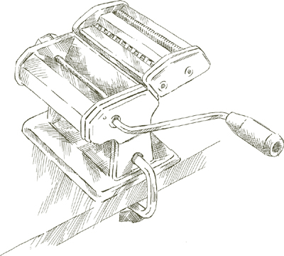
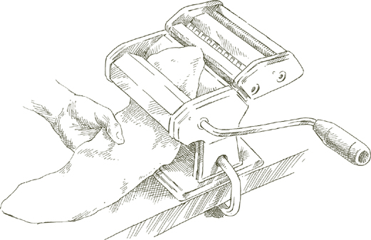
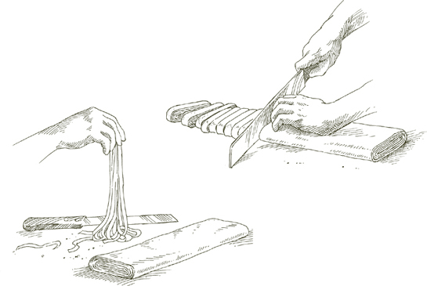
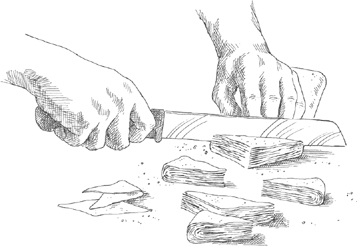
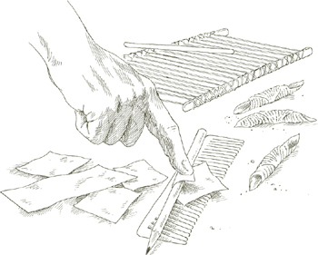
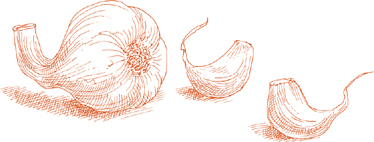
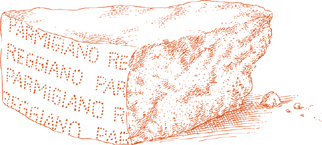

The pot  Use a lightweight pot, such as enameled aluminum, that will transmit heat quickly and be easy to handle when full of pasta and boiling water.
Use a lightweight pot, such as enameled aluminum, that will transmit heat quickly and be easy to handle when full of pasta and boiling water.
The colander An ample colander with feet attached should be waiting, resting securely in the kitchen sink or a large basin.
Water Pasta needs lots of water to move around in, or it becomes gummy. Four quarts of water are required for a pound of pasta. Never use less than 3 quarts, even for a small amount of pasta. Add another quart for each half pound, but do not cook more than 2 pounds in the same pot. Large quantities of pasta are difficult to cook properly, and pots with that much water are heavy and dangerous to handle.
Salt For every pound of pasta, put in no less than 1½ tablespoons of salt, more if the sauce is very mild and undersalted. Add the salt when the water comes to a boil. Wait until the water returns to a full, rolling boil before putting in the pasta.
Olive oil Never put oil in the water except when cooking stuffed homemade pasta. In the latter case, a tablespoon of oil in the pot reduces the friction and keeps the stuffed pasta from splitting.
Calculating servings One pound of factory-made, boxed dry pasta should produce 4 to 6 servings, depending on what follows the pasta. For approximate servings of fresh pasta, see the section on homemade pasta.
Putting the pasta in the pot The pasta goes in after the boiling water has been salted and has returned to a full boil. Put all the pasta in at one time and cover the pot briefly to hasten the water’s return to a boil. Watch it to avoid it boiling over and extinguishing the gas flame. When the water has once again returned to a boil, cook either uncovered or with a lid on largely askew. Using a long wooden spoon, stir the pasta the moment it goes into the water, and frequently thereafter while it is cooking.
• If you are cooking long dried pasta such as spaghetti or perciatelli, when you drop it in the pot, use a long wooden spoon to bend the strands and submerge them completely. Do not break up spaghetti or any other long pasta into smaller pieces.
• If you are using homemade pasta, gather all of it in a dish towel, tightly hold one end of the towel high above the boiling water, loosen the bottom end, and let the pasta slide into the pot.
Al dente Pasta must be cooked until it is firm to the bite, al dente. The firmness of spaghetti and other dried factory pasta is different from that of fettuccine and other homemade pasta. The latter can never be as firm and chewy as the former, but that does not mean one should allow it to become yieldingly soft: It should always offer some resistance to the bite. When it does not, pasta becomes leaden, it loses buoyancy and its ability to deliver briskly the flavors of its sauce.
Draining The instant pasta is done, and not a second later, you must drain it, pouring it out of the pot and into the colander. Give the colander a few vigorous sideways and up-and-down shakes to drain all the water away.
Saucing and tossing Have the sauce ready when the pasta is done. Do not let drained pasta sit in the colander waiting for the sauce to be finished or reheated. Transfer cooked, drained pasta without a moment’s delay to a warm serving bowl. The instant it’s in the bowl, start tossing it with the sauce. If grated cheese is called for, add some of it immediately, and toss the pasta with it. The heat will melt the cheese, which can then fuse creamily with the sauce.
In the sequence of steps that lead to producing a dish of pasta and getting it to the table, none is more important than tossing. Up to the time you toss, pasta and sauce are two separate entities. Tossing bridges the separation and makes them one. The oil or butter must coat every strand thoroughly and evenly, reach into every crevice, and with it carry the flavors of the components of the sauce. However marvelous a sauce may be, it cannot merely sit on top of or at the bottom of the bowl. If it is not broadly and uniformly distributed, the pasta for which it is intended will have little flavor.
When you add the sauce, toss rapidly, using a fork and spoon or two forks, bringing the pasta up from the bottom of the bowl, separating it, lifting it, dropping it, turning it over, swirling it around and around. If the sauce clings thickly together, separate it with the fork and spoon so that it can be spread evenly.
When the sauce is butter-based, add a dollop of fresh butter and give the pasta one or two last tosses. If the sauce has an olive oil base, follow the same procedure, using fresh olive oil instead of butter.
Note Fresh pasta is more absorbent than factory-made pasta, and more butter or oil is usually required.
Serving Once the pasta is sauced, serve it promptly, inviting your guests and family to put off talking and start eating. The point to remember is that from the moment the pasta is done, there should be no pauses in the sequence of draining, saucing, serving, and eating. Cooked, hot pasta must not be allowed to sit, or it will turn into a clammy, gluey mass.
 Factory-Made Pasta
Factory-Made Pasta 
THE BOXED, dry pasta one refers to as factory-made includes such familiar shapes as spaghetti, penne, and fusilli. These cannot be made as successfully at home as they are in commercial pasta plants with industrial equipment. Dry pasta from factories is not necessarily less fine than the fresh pasta one can make at home. On the contrary, for many dishes, factory-made pasta is the better choice, although for some others, one may want the particular attributes of homemade pasta. The differences between the two categories of pasta and their general applications are discussed in the 'Pasta' section of the introduction.
How to Make Fresh Pasta at Home UNLESS you happen to live in Emilia-Romagna, in whose towns and cities there are still a few shops selling pasta made by hand, you can make far better fresh pasta, either by the rolling-pin method or the machine method, than you can buy or eat anywhere.
It needs to be said, however, that the two methods are not merely separate ways of reaching the same objective. Pasta rolled by hand is quite unlike the fresh pasta made with a machine. In hand-rolled pasta, the dough is thinned by stretching it, with a rapid succession of hand motions, over the length of a yard-long wooden dowel. In the machine method, the dough is squeezed between two cylinders until it reaches the desired thinness.
The color of hand-stretched pasta is demonstrably deeper than that thinned by machine; its surface is etched by a barely visible pattern of intersecting ridges and hollows; when cooked, the pasta sucks in sauce and exudes moistness. On the palate it has a gossamer, soft touch that no other pasta can duplicate. But learning the rolling-pin method is, unfortunately, not just a question of following instructions but rather of learning a craft. The instructions must be executed again and again with great patience, and mastered by a pair of nimble, willing hands until the motions are performed through intuition rather than deliberation.
The machine, on the other hand, requires virtually no skill to use. Once you have learned to combine eggs and flour into a dough that is neither too moist nor too dry, all you do is follow a series of extraordinarily simple, mechanical steps and you can produce fine fresh pasta inexpensively, at home, at the very first attempt.
The flour In Italy, the classic fresh egg pasta produced in the Bolognese style is made with a flour known as 00, doppio zero. It is a talcum-soft white flour, less strong in gluten than American all-purpose flour of either the bleached or unbleached variety. When, outside of Italy, I make fresh pasta at home, I have found that unbleached all-purpose flour does the most consistently satisfying job: It is easy to work with; the pasta it produces is plump and has marvelous texture and fragrance.
Confusion exists over the merits of semolina, which is milled from durum, the strongest of wheats. In Italian it is called semola di grano duro, and you will find it listed on all Italian packages of factory-made pasta. It is the only suitable flour for industrially produced pasta, but I do not prefer it for home use. To begin with, its consistency is often grainy, even when it is sold as pasta flour, and grainy semolina is frustrating to work with. Even when it is milled to the fine, silky texture you need, you must use a machine to roll it out; to try to do it with a rolling pin is to face a nearly hopeless struggle. My advice is to leave semolina flour to factories and to commercial pasta makers: At home use unbleached all-purpose flour.
The machine The only kind of pasta machine you should consider is the kind that has one set of parallel cylinders, usually made of steel, for kneading and thinning the dough, and a double set of cutters, one broad for fettuccine, the other for tagliolini, very narrow noodles. Virtually all these machines are hand-cranked, but electric ones are made, and there is also a separate motor one can buy that connects easily to the machine’s shaft to replace the crank.
Do not be tempted by one of those awful devices that masticate eggs and flour at one end and extrude a choice of pasta shapes through another end. What emerges is a mucilaginous and totally contemptible product, and moreover, the contraption is an infuriating nuisance to clean.

For yellow pasta dough 1 cup unbleached flour and 2 large eggs produce about ¾ pound homemade pasta, which will yield 3 standard portions or 4 of appetizer dimensions. Use the above as an approximate ratio of flour to eggs, which you may need to alter depending on the absorption capacity of the eggs, and sometimes, even on the humidity or lack thereof in the kitchen.
Note If making dough for stuffed yellow pasta, add ½ tablespoon of milk to the above proportions.
For green pasta dough 1½ cups unbleached flour, 2 large eggs, and either ½ of a 10-ounce package of frozen leaf spinach, thawed, OR ½ pound fresh spinach. The yield is approximately 1 pound of green pasta, which produces 4 standard portions.
If using thawed frozen spinach, cook it in a covered pan with ¼ teaspoon salt until it is tender and loses its raw taste. If using fresh spinach, wash it and cook it. Drain either kind of spinach of all liquid, and when cool enough to handle, squeeze it in your hands to force it to shed any remaining liquid. Chop very fine with a knife, but not in a food processor, which draws out too much moisture.
Note Outside of spinach, no other coloring can be recommended as an alternative to basic yellow pasta. Other substances have no flavor, and therefore have no gastronomic interest. Or, if they do contribute flavor, such as that of the deplorable black pasta whose dough is tinted with squid ink, its taste is not fresh. Pasta does not need to be dressed up, except in the colors and aromas of its sauce.
Combining the eggs and flour Because no one can tell in advance exactly how much flour one needs, the sensible method of combining eggs and flour is by hand, which permits you to adjust the proportion of flour as you go along.
Pour the flour onto a work surface, shape it into a mound, and scoop out a deep hollow in its center. Break the eggs into the hollow. If making green dough, also add the chopped spinach at this point.
Beat the eggs lightly with a fork for about 1 minute as though you were making an omelet. If using spinach, beat for a minute or so longer. Draw some of the flour over the eggs, mixing it in with the fork a little at a time, until the eggs are no longer runny. Draw the sides of the mound together with your hands, but push some of the flour to one side, keeping it out of the way until you find you absolutely need it. Work the eggs and flour together, using your fingers and the palms of your hands, until you have a smoothly integrated mixture. If it is still moist, work in more flour.

When the mass feels good to you and you think it does not require any more flour, wash your hands, dry them, and run a simple test: Press your thumb deep into center of the mass; if it comes out clean, without any sticky matter on it, no more flour is needed. Put the egg and flour mass to one side, scrape the work surface absolutely clear of any loose or caked bits of flour and of any crumbs, and get ready to knead.
Kneading The proper kneading of dough may be the most important step in making good pasta by machine, and it is one of the secrets of the superior fresh pasta you can make at home. Dough for pasta can be kneaded in a machine, but it isn’t really that much quicker than doing it by hand, and it is far less satisfactory, particularly when kneaded in a food processor.
Return to the mass of flour and eggs. Push forward against it using the heel of your palm, keeping your fingers bent. Fold the mass in half, give it a half turn, press hard against it with the heel of your palm again, and repeat the operation. Make sure that you keep turning the ball of dough always in the same direction, either clockwise or counterclockwise, as you prefer. When you have kneaded it thus for 8 full minutes and the dough is as smooth as baby skin, it is ready for the machine.

Note If you are working with a large mass, you can divide it into 2 or more parts and finish kneading one before taking on the other. Keep any part of the mass you are not working with or of the dough you have finished kneading tightly covered in plastic wrap.
Thinning Cut each ball of dough made with 2 eggs into 6 equal parts. In other words, the pieces of dough you end up with for thinning should be three times as many as the eggs you used.
Spread clean, dry, cloth dish towels over a work counter near where you’ll be using the machine. If you are making a lot of pasta you’ll need a lot of counter space and a lot of towels.

Set the pair of smooth cylinders, the thinning rollers, at their widest opening. Flatten one of the pieces of dough by pummeling it with your palm, and run it through the machine. Fold the dough twice into a third of its length, and feed it by its narrow end through the machine once again. Repeat the operation 2 or 3 times, then lay the flattened strip of pasta over a towel on the counter. Since you are going to have a lot of strips, start at one end of the counter, leaving room for the others.
Take another piece of dough, flatten it with your hand, and run it through the machine exactly as described above. Lay the strip next to the previously thinned one on the towel, but do not allow them to touch or overlap, because they are still moist enough to stick to each other. Proceed to flatten all the remaining pieces in the same manner.

Note This is the procedure to follow if you are going to cut the pasta into noodles. If you plan to use it for raviolini or other stuffed shapes, please see the stuffed pasta note.
Close down the opening between the machine’s rollers by one notch. Take the first pasta strip you had flattened and run it once through the rollers, feeding it by its narrow end. Do not fold it, but spread it flat on the cloth towel, and move on to the next pasta strip in the sequence.
When all the pasta strips have gone through the narrower opening once, bring the rollers closer together by another notch, and run the strips of pasta through them once again, following the procedure described above. You will find the strips becoming longer, as they get thinner, and if there is not enough room to spread them out on the counter, you can let them hang over the edge. Continue thinning the strips in sequence, progressively closing down the opening between the rollers one notch at a time, until the pasta is as thin as you want it. This step-by-step thinning procedure, which commercial makers of fresh pasta greatly abbreviate or skip altogether, is responsible, along with proper kneading, for giving good pasta its body and structure.
Stuffed pasta note Pasta dough to be used as a wrapper for stuffing should be soft and sticky. You must, therefore, make the following change in the sequence described above: Take just one piece of dough at a time through the entire thinning process, cut it, and stuff it as the recipe you’ve chosen describes. Then go on to the next piece. Keep all the pieces of dough waiting to be thinned out tightly wrapped in plastic wrap.
Drying For all cut pasta, fettuccine, tagliolini, pappardelle, and so on, allow the strips spread on the towels to dry for 10 minutes or more, depending on the temperature and ventilation of your kitchen. From time to time, turn the strips over. The pasta is ready for cutting when it is still pliant enough that it won’t crack when cut, but not so soft and moist that the strands will stick to each other. Pasta requires no additional drying except for the purpose of storing it.
Cutting flat pasta Use the broader set of cutters on the machine to make fettuccine, and the narrower ones for tonnarelli (see below) or tagliolini. When the pasta strips are sufficiently, but not excessively, dried, feed them through the cutter of choice. As the ribbons of noodles emerge from the cutter, separate them and spread them out on the cloth towels. To cook, gather the pasta in a single towel, as described in "The Essentials of Cooking Pasta", and slide it into boiling, salted water.
• Tonnarelli One of the most interesting shapes is this thin, square noodle from central Italy, which goes superbly well with an exceptional variety of sauces. It is also known as maccheroni alla chitarra because of the guitar-like tool used in central Italy for cutting it. It is as thick as it is broad. Its firmer body gives it the substance and “bite” of factory pasta, while its surface maintains the texture and affinity for delicate sauces of all homemade pasta.
The machine does a perfect job of making tonnarelli. The dough for tonnarelli must be left thicker than that for fettuccine and other noodles. To obtain the square cross-section this noodle must have, the thickness of the pasta strip should be equal to the width of the narrower grooves of the machine’s cutter. On most machines, the last thinning setting for tonnarelli is the second before the last. To make sure, run some dough through that setting and make sure that its thickness equals the width of the narrower cutting grooves.

• Pappardelle In Bologna, the city where homemade pasta reigns supreme, this eye-filling broad noodle is one of the favorite cuts. Its larger surface accepts substantial sauces, whether made with meat or vegetables or a combination of both. It has to be cut by hand, because the machine has no cutters for pappardelle. Cut the rolled-out pasta strips into ribbons about 6 inches long and 1 inch wide. A pastry wheel is the most efficient tool to use for the purpose, and the fluted kind yields the most attractive results.

• Tagliatelle When you use the broader cutters of the pasta machine, what you get is fettuccine. Tagliatelle, the classic Bolognese noodle and the best suited to Bolognese meat sauce, is a little broader and must be cut by hand. When the thinned strips of pasta are dry enough to cut, but still soft enough to bend without cracking, fold them up loosely along their length, making a flat roll about 3 inches wide at its sides. With a cleaver or similar knife, cut the roll into ribbons about ¼ inch wide. Cut parallel to the original length of the pasta strip so that when you unroll the tagliatelle the noodle will be the full length of the strip.

Drying noodles for long storage It is often assumed that fresh pasta must be soft. Nothing could be more misleading. It is indeed soft the moment it’s made, and it is perfectly all right to cook it while it is still in that state. But if one waits it will dry; it is a natural process and there is no reason to interfere with it. On the contrary, all the artificial methods by which fresh pasta is kept soft—sprinkling it with cornmeal, wrapping in plastic, refrigerating it—are not merely unnecessary, they actually undermine the quality of the pasta and ought to be shunned. When cooked, properly dried fresh pasta delivers all the texture and flavor it had originally. The limp product marketed as “fresh” pasta does not.

Once dried, fresh homemade noodles can be stored for weeks in a cupboard, just like a box of spaghetti. As the noodles are cut, gather several strands at a time and curl them into circular nest shapes. Allow them to dry totally before storing them because, if any moisture remains when they are put away, mold will develop. To be safe, let the nests dry on towels for 24 hours. When dry, place them in a large box or tin, interleaving each layer of nests with paper towels. Handle carefully because they are brittle. Store in a dry cupboard, not in the refrigerator.
Note Allow slightly more cooking time for dried fresh pasta.
It is in its cuts for soup that homemade pasta, with its light egg flavor and gentler consistency, clearly emerges as more desirable than the boxed factory-made kind.
• Maltagliati It is the best pasta you can use for thick soups, especially bean soups. Its name means “badly cut,” because its irregular lozenge shape is not that of a long, even-sided ribbon. Fold the pasta strips into flat rolls, as described above for tagliatelle. Instead of cutting the roll straight as you would for regular noodles, cut it on the bias, cutting off first one corner, then the other. This leaves the pasta roll coming to a sharp point in the center of its cut end. Even off that end with a straight cut across, then cut off the corners once more as before. When you have finished cutting one roll, unfold and loosen the maltagliati immediately so they don’t stick to each other.
Every time you make pasta, it is a good idea to use some of the dough for maltagliati. It can be dried for long storage, as described above, and you will have it available any time you want to add it to a soup.

• Quadrucci They are little squares, as their Italian name tells us, and they are made by first cutting the pasta into tagliatelle widths then, instead of unfolding the noodles, cutting them crosswise into squares. Quadrucci are particularly lovely in a fine homemade meat broth with peas and sautéed chicken livers.
• Manfrigul It is pasta chopped into small, barley-like nuggets, a specialty of Romagna, the northeastern coastal area on the Adriatic. Its robust, inimitable chewiness contributes enjoyable textural contrast to soup.
Prepare kneaded dough. Flatten the dough with the palm of your hand to a thickness of about 2 inches. Cut it into the thinnest possible slices and spread these on a clean, dry, cloth towel. Turn them once or twice and allow them to dry until they lose their stickiness, but not so dry that they become brittle. Depending on the temperature and ventilation in the kitchen, it may take between 20 and 30 minutes. Cut one of the slices to see whether the dough is still sticky. If not, transfer all the sliced dough to a cutting board and dice it very fine with a sharp knife.
Note Manfrigul can be chopped in the food processor, using the steel blade. Pulse the motor on and off to ensure fairly even chopping. Stop when you reach the consistency of very tiny pellets. When done, part of the dough will have become pulverized. Discard it by emptying the processor’s bowl into a fine strainer and shaking the powdered dough away.
Keeping manfrigul: It keeps so well that it is a good idea to have a supply always on hand. Spread on a dry, clean, cloth towel and let it dry out thoroughly. It takes about 12 hours, so you may want to leave it out overnight. Store it in a cupboard in a closed glass jar.
Use manfrigul in vegetable soups, or in any soup where you might use rice or barley. It is also excellent on its own, in Basic Homemade Meat Broth, served with grated Parmesan.
For all the shapes given below, work only with soft, moist, just-made dough. Before beginning, read the instructions given in the Stuffed Pasta note. The softness of dough that has just been rolled out makes it easier to shape, and its stickiness is necessary to produce a tight seal that will keep the stuffing from leaking during the cooking.
• Tortellini The dumplings that in Bologna are called tortellini, in Romagna—the provinces of Ravenna, Forlì, and Rimini—are called cappelletti. The fillings may vary, but the method for making the wrappers is the same. Trim the strips of pasta dough into rectangular bands 1½ inches wide. Do not discard the trimmings, but press them into one of the balls of dough to be thinned out later.

Cut the bands into 1½-inch squares. Put about ¼ teaspoon of whatever filling the recipe calls for in the center of each square. Fold the square diagonally in half, forming two triangles, one above the other. The edges of the top half of the triangle should stop short of meeting those of the bottom half by about ⅛ inch. Press the edges firmly together with your fingertip, sealing them tightly.

Pick up the triangle by one of the corners of its long side, the folded over side. Pick up the other end with the other hand, holding it between thumb and forefinger. The triangle should now be facing you, its long side parallel to the kitchen counter, its tip pointing straight up. Without letting go of the end, slip the index finger of one hand around the back of the triangle, and as you turn the fingertip toward you let it come up against the base of the triangle pushing it upward in the direction of the tip. As you do this, the triangle’s peak should tip toward you and fold over the base. With the same motion, bring together the two corners you are holding, forming a ring around the tip of your forefinger which should still be facing you. Lap one corner over the other, pressing them firmly togeter to close the ring securely. Slip the tortellino off your finger, and place it on a clean, dry, cloth towel.
As you continue to make them, lay all the tortellini in rows on the towel, making sure they do not touch or they will stick to each other and tear when separated. Although they are ready for cooking immediately, it’s likely that you will be making them a few hours or even a day ahead of time. When making them in advance, turn them from time to time, so that they dry evenly on all sides. Do not let them touch until the dough has become leather hard, or you will end up with torn tortellini.
Suggestion: Before making tortellini for the first time, cut facial tissue into a number of squares 1½ by 1½ inches, and practice on them until you feel you’re doing it right.
• Tortelloni, Tortelli, Ravioli They are called by different names, and they may vary in size and in their stuffing, but they are all one shape: square. To make them, trim soft, freshly made pasta dough into a long rectangle that is exactly twice the width of the dumpling the recipe calls for.

Assume, as an example, that the recipe requires tortelloni with 2-inch wide sides. Cut the dough into a long rectangle 4 inches broad. Put dots of stuffing down 2 inches apart. The distance between the dots must always be the same as the width of the dumpling, in this case 2 inches. The dotted row of stuffing runs parallel to the edges of the rectangle and is set back 1 inch—half the width of the dumpling—from one edge. (This is much easier to do than it is to try to visualize. Try it first with paper cut to size, and you’ll see.)
Once the rectangle is dotted with stuffing, bring the edge farther from the row of dots over it and join it to the other edge, thus creating a long tube that encloses the stuffing. Use a fluted pastry wheel to trim the joined edges and both ends of the tube, to seal it all around. With the same wheel, cut across the tube between every mound of stuffing, separating it into squares.

Spread the squares out on clean, dry, cloth towels, making sure they do not touch while the dough is still soft. If they do they will stick to one another and tear when you try to pull them apart. If you are not cooking them right away, turn the squares over from time to time while they are drying.
• Garganelli Garganelli, a hand-turned, grooved tubular pasta, is a specialty of Imola and other towns in Romagna. Its floppy shape, somewhat reminiscent of factory-made penne, and its texture, which is that of homemade pasta, combine to offer unique and delicious sensations when matched with a congenial sauce. Although it is not stuffed, garganelli must be made with soft, fresh dough, like the tortellini and tortelloni above.
In Romagna, garganelli is made with the help of a small, loom-like tool called pettine, or comb. As a substitute, you can use a clean, new hair comb with teeth at least 1½ inches long. An Afro comb would do the job. You also need a small dowel or a smooth, perfectly round pencil ¼ inch in diameter and 6 to 7 inches long.

Cut soft, fresh dough into 1½-inch squares. Lay the comb flat on the counter, its teeth pointing away from you. Lay a pasta square diagonally on the comb so that one corner points toward you, another toward the tips of the comb’s teeth. Place the dowel or pencil on the square and parallel to the comb. Curl the corner of the square facing you around the dowel and, with gentle downward pressure, push the dowel away from you and off the comb. Tip the dowel on its end and a small, ridged tube of pasta will slide off. Spread the garganelli on a clean, dry, cloth towel, making sure they do not touch each other. Garganelli cannot be made long in advance and dried like other pasta because they will crack while cooking. They are best cooked immediately, but if you cannot do that, plunge them in boiling water for a few seconds, drain immediately, toss with olive oil, and spread on a tray to cool.
• Stricchetti This is the shape known as “bow ties” in English or farfalline in standard Italian; stricchetti is in the dialect of Romagna, where the shape probably originated. It is the easiest of all pasta shapes to form by hand. Cut soft, freshly made pasta dough into rectangles 1 by 1½ inches. Pinch each rectangle at the middle of its long sides, bringing the sides together, and squeezing them fast. There is also a slightly more complicated method that has the advantage of producing a smaller mound in the center. Place your thumb in the middle of the rectangle, and fold the center of one of the long sides toward it; replace the thumb with the tip of your index finger, and with your thumb, bring the center of the other side of the rectangle to meet it. Squeeze tightly to fasten the fold.
Drying stuffed and shaped pasta Tortellini, ravioli, and the other stuffed or shaped pasta described above can be stored for at least a week once fully dry and leather hard. Allow the pasta to dry out for 24 hours, turning it from time to time, before putting it away. It can be stored in a cupboard, as is done in Italy, but if you’d rather refrigerate the stuffed pasta, you can do so. Make certain it has dried thoroughly first, or mold will develop.
The necessary equipment To make pasta by hand you need a large, steady table and a pasta rolling pin. For cutting the pasta after it is rolled out, it would be helpful to have a Chinese cleaver, which is what most closely resembles the kind of knife used in Bologna.
A depth of 24 inches is sufficient for the table, but the longer it is, the easier it is to work with. Three feet would be adequate, and 4½ would be ideal.
The best material for the table’s top is wood, either solid hardwood planking or butcher block. Formica or Corian is satisfactory. The least desirable material is marble, whose coldness inhibits the dough, making it inelastic.
If the top is wood, make sure the edge near you is not sharply angular, because it would cut a sheer sheet of pasta hanging over it. If it is not smooth and rounded, sand it to make it so. Laminated tops usually don’t present this problem because the edge is either covered by a molding or it is finished blunt.
The rolling pin for pasta is narrower and longer than pastry pins. Its classic dimensions are 1½ inches in diameter and 32 inches in length. It’s not easy to come by outside of Emilia-Romagna, although some particularly well-stocked kitchen equipment stores occasionally carry it. A good lumber-supply house can cut you one from a hardwood dowel whose thickness can vary from 1½ to 2 inches. Sand the ends of the dowel to make them perfectly smooth.
Curing and storing a rolling pin: Wash it with soap and water, then rinse all the soap away under cold running water. Dry thoroughly with a soft cloth. Allow the pin to become completely dry in a moderately warm room.
Moisten a cloth with any neutral-tasting vegetable oil and with it rub the entire surface of the pin. Don’t put on too much oil, it should be a very light coating. When the oil has seeped into the wood, rub the pin with flour.
To maintain the pin in good condition, repeat the “cure” once every dozen times the pin is used.
Store the pin hanging free to keep it from warping. Screw an eye hook into one end, and suspend the pin from a hook set into a wall or inside a cupboard. Take care not to dent the pin because any unevenness in its surface may tear the pasta.
Before you pick up the rolling pin, read through all the following instructions carefully. The movements with the pin are like a ballet of the hands and they should be learned as a dancer learns a part. Before your hands can take over and their action become intuitive, the logic and sequence of the motions must unfold clearly in the mind.
The dough Prepare a kneaded ball of dough exactly as described in the section on "Pasta by the Machine Method."
Suggestion: When making pasta by hand for the first time, you’ll find it easier to start with green pasta dough. It is softer and easier to stretch.
Relaxing the dough Even when you have become accomplished in the use of the pin, it is desirable to let the kneaded dough rest and relax its gluten before rolling it out. When it is fully kneaded, wrap the ball of dough in plastic wrap, and let it rest at room temperature for at least 15 minutes or as much as 2 hours.
The first movement Remove the plastic wrap from the ball of dough and place the dough within comfortable reach in the center of the work table. Flatten it slightly by pounding it two or three times smartly with the palm of your hand.

Place the rolling pin across the flattened top of the ball, about one-third of the way in toward its center. The pin must be parallel to the edge of the table near you.
Open out the ball of dough by pushing the pin forcefully forward, letting it roll lightly backward to its starting point, and pushing it forward again, repeating the operation 4 or 5 times. Do not at any time allow the pin to roll onto or past the far edge of the dough.
Turn the dough a full quarter turn, and repeat the above operation. Continue to turn the gradually flatter disk of dough a full quarter turn at first, then gradually less, but always in the same direction. If you are doing it correctly, the ball will spread into an evenly flattened, regularly circular shape. When it has been opened up to a diameter of about 8 to 9 inches, proceed to the next movement.
The second movement You will now begin to stretch the dough. Hold the near edge of the dough down with one hand. Place the rolling pin at the opposite, far edge of the dough, laying it down parallel to your side of the table. One hand will be working the pin while the other will act as a stop, holding down the edge of the dough nearest you.
Curl the far edge of the dough around the pin. Begin to roll the pin toward you, taking up as much dough as needed to fit snugly under the pin. Hold the near edge of the dough still with your other hand. Roll the pin toward you, then use the heel of your palm to push it back. Do not roll it back, but push, making the sheet of dough taut between your two hands, and stretching it. This should be done very rapidly, in a continuous and fluid motion. Do not put any downward pressure whatsoever into the movement. Do not let the hand working the pin rest on the dough longer than 2 or 3 seconds on the same spot.

Keep rolling the pin toward you, stopping, pushing it forward to stretch the dough, taking up more dough with it, rolling it toward you, stopping, stretching, repeating the sequence several times until you have taken up all the dough on the pin. Then, while the dough is curled around the pin, rotate the pin a full half turn—180°—so that it points toward you, and unfurl the dough, opening it up flat.
Repeat the rolling and stretching operation described above until the dough is once again completely wrapped around the pin. Rotate the pin another 180° in the same direction as before, uncurl the dough from it, and repeat the operation once again. Continue this procedure until the sheet of dough has been stretched to a diameter of about 12 inches. Proceed immediately to the next movement.
The third movement This is the decisive step, the one in which you’ll stretch the sheet of dough to nearly double its preceding diameter, when it ceases to be merely dough and becomes pasta. When your hands have mastered the rhythmic and pressureless execution of this movement, you will have acquired one of the most precious of culinary crafts: handmade pasta in the Bolognese tradition.
The circle of dough lies flat before you on the table. Place the rolling pin at its far end, parallel to the edge of the table near you. Curl the end of the dough around the center of the pin and roll the pin toward you, taking up with it about 4 inches of the sheet of dough. Cup both your hands lightly over the center of the pin, keeping your fingers from touching it. Roll the pin away from you and then toward you, taking up with it no more than the original 4 inches of dough. At the same time that you are rolling the pin back and forth, slide your hands apart from each other and toward the ends of the pin, and back to the center, quickly repeating the motion a number of times.

As your hands move away from the center, let the heels of your palms brush against the surface of the dough, dragging it, pulling it, in fact stretching it toward the ends of the pin. At the same time that you are sliding your hands from the center toward the ends, you must roll the pin toward you. Bear in mind that there is some pressure in this motion but it is directed sideways, not downward. If you press down on the dough it won’t stretch because it will stick to the pin.
When the hands move back toward the center they should float over the dough, barely skimming it. You want to stretch the dough outward, toward the ends of the pin, and not drag it back toward the center. At the same time that you are bringing your hands back to the center of the pin, roll it forward, away from you.
Your hands must flit out and back very rapidly, touching the dough only with the heel of the palm, applying pull as they move outward, never weight. And all this while, you must also rock the pin forward and back.
Take up another few inches of dough on the pin and repeat the combined motion: The hands moving out and in, the pin rocking forward and back.
When you have taken up and stretched all but the last few inches of dough, rotate the pin 180°, unfurl the sheet of dough opening it up flat, and start again from the far end, repeating the entire stretching operation described above.

As the sheet of dough becomes larger, let it hang over the near side of the table. It will act as a counterweight and contribute to the stretching action. But do not lean against it, because you might break it. As you take up dough on the rolling pin, you will allow the end of the sheet to slide gradually back onto the table.
When you have rotated the pasta sheet a complete turn and it is all fully stretched, open it up flat on the table and use the rolling pin to iron out any creases.
The entire third movement should be executed in 10 minutes or less for a standard quantity of pasta dough.
• Thinning out a ball of dough into a sheer sheet of pasta is a race against time. Dough can be stretched as long as it is soft and pliable, but its flexibility is short-lived. The moment dough begins to dry out, it refuses to give and starts to crack. From the very beginning, you must work on developing speed.
• Do not make pasta while the oven is turned on, or near a hot radiator, or in a draft. All these cause dough to dry out.
• Work with the dough within easy reach of your arms to exercise better control of your movements.
• Before you begin rolling out real dough, it might be helpful to try out the stretching motion, using a circular sheet of oilcloth or non-sticky plastic.
Problems: Their Causes and Possible Solutions
• Holes in the pasta. It happens to everyone, occasionally even to experts. Usually it’s not serious. Patch the dough, narrowly overlapping the edges of the tears. Seal with slightly moistened fingertips, if necessary. Smooth the patch with the rolling pin, and resume working the dough.
• Tiny cracks at the edges. This means the dough began to dry out faster than you were stretching it. Or you thinned out the edge of the sheet more than the center. The sheet cannot be stretched further, but if it is already passably thin, it can still be used.
• The dough falls apart. Either you are letting it dry out by not stretching it fast enough, or you kneaded it too dry originally, with too much flour, that is. A fatal symptom. Start over again from scratch, taking special care, when kneading, to produce dough that is tender and elastic.
• You cannot get the pasta thin enough. Basically it’s a question of practice and perseverance. Reread the descriptions of the stretching movements. Work faster. There may also be technical reasons: The dough has not been kneaded long or thoroughly enough; it has too much flour; you didn’t let it rest after kneading; the kitchen may be too hot, too dry, too draughty.
• The sheet sticks to itself or to the rolling pin. You may be putting downward pressure into your stretching motion. Or you have kneaded the dough too soft, with insufficient flour. In this case, you may be able to rescue the dough by sprinkling flour over it and spreading it uniformly over the sheet.
• The pasta is too thick for fettuccine or tortellini, but looks too good to throw away. Cut it into maltagliati, quadrucci, or manfrigul, and use in soup. If very thick, allow adequate time when cooking.
Drying handmade pasta Spread a dry, clean, cloth towel on a table or work counter and lay the sheet of pasta flat over the towel, making sure there are no creases. Let one-third of the sheet hang over the edge of the table or counter. After about 10 minutes, rotate the sheet to let a different part of it hang. Another 10 minutes and rotate it again. Total drying time depends on the softness of the dough and the temperature and ventilation in the room. The dough must lose enough of its moisture so that it will not stick to itself when folded and cut, but it must not dry out too much or it will become brittle and crack. It is usually ready when the surface of the pasta begins to have a leathery look.
Cutting handmade pasta When the dough has reached a desirable stage of dryness, roll up the sheet on the pasta pin, remove the towel from the counter, and unroll the pasta from the pin, laying it flat on the work surface. Pick up the edge of the sheet farthest from you, and fold the sheet loosely about 3 inches in from the edge. Fold it again, and again, until the whole sheet has been folded into a long, flat, rectangular roll about 3 inches wide.
With a cleaver or other suitable knife, cut the roll across into ribbons, ¼ inch wide for tagliatelle, a little narrower for fettuccine. Unfold the ribbons and spread out on a dry, clean, cloth towel. See instructions on drying pasta for long-term storage, and for other cuts.
Using handmade pasta for tortellini and other shapes If you are going to make stuffed pasta and other shapes that require soft dough, do not let the pasta sheet dry. Refer to remarks on dough for stuffed pasta.
Trim one end of the pasta sheet to give it a straight edge. (Save the trimmings to cut into soup squares.) Cut off a rectangular strip from the sheet; if you are making tortellini, the strip should be 1½ inches wide; if you are making tortelloni or other square shapes, the strip should be twice the width of the shape required by the recipe.
Move the remaining sheet of dough to one side, and cover it with plastic wrap to keep it from drying. Use the strip to make tortellini, or any other shape. When the one strip has been turned into the desired shape, cut off another identical strip from the main sheet, remembering afterward to keep the main sheet covered in plastic wrap.
Pasta Sauces For a long time, Italian dishes abroad had been characterized by such a heavy-handed use of tomato that, for the many who had begun to discover refinement and infinite variety in the regional cuisines of Italy, the color red and any taste of tomato in a sauce came to represent a coarse and discredited style of cooking. The moment for a major reassessment may be at hand.
There is nothing inherently crude about tomato sauce. Quite the contrary: No other preparation is more successful in delivering the prodigious satisfactions of Italian cooking than a competently executed sauce with tomatoes; no flavor expresses more clearly the genius of Italian cooks than the freshness, the immediacy, the richness of good tomatoes adroitly matched to the most suitable choice of pasta.
The sauces that are grouped immediately below are those in which tomatoes have a dominant role. They are followed by a broad selection of recipes that shift their focus from tomatoes to other vegetables, to cheese, to fish, to meat, illustrating the unrestricted choice of ingredients on which a pasta sauce can be based.
The basic cooking method Pasta sauces may cook slowly or rapidly, they may take 4 minutes or 4 hours, but they always cook by evaporation, which concentrates and clearly defines their flavor. Never cook a sauce in a covered pan, or it will emerge with a bland, steamed, weakly formulated taste.
Tasting a sauce and correcting for salt A sauce must be sufficiently savory to season pasta adequately. Blandness is not a virtue, tastelessness is not a joy. Always taste a sauce before tossing the pasta with it. If it seems barely salty enough on its own, it’s not salty enough for the pasta. Remember it must have flavor enough to cover a pound or more of cooked, virtually unsalted pasta.
When tomato is the main ingredient: If they are available, use fresh, naturally and fully ripened, plum tomatoes. Varieties other than the plum may be used, if they are equally ripe and truly fruity, not watery. If completely satisfactory fresh tomatoes are not available, it is better to use canned imported Italian plum tomatoes. If your local grocers do not carry these, experiment with other canned varieties until you can determine which has the best flavor and consistency. See a brief discussion of fresh and canned tomatoes as a component of Italian cooking.
Cooking-time note For all the tomato sauces that follow, the cooking time given is indicative. If you make a larger quantity of sauce, it will take longer; if the pot is broad and shallow, the sauce will cook faster, if it is deep and narrow, it will cook more slowly. You alone can tell when it’s ready. Taste it for density: It should be neither too thick nor too watery, and for flavor the tomato must lose its raw taste, without losing sweetness or freshness.
Freezer note Wherever indicated, tomato sauces may be frozen successfully. After thawing, simmer for 10 minutes before tossing with pasta.
Reminder If the sauce has butter, always toss the pasta with an additional tablespoon of fresh butter; if it has olive oil, drizzle with raw olive oil while tossing.
Unless the recipe indicates otherwise, fresh, ripe tomatoes must be prepared to use for sauce following one of the two methods given below. The blanching method can lead to a meatier, more rustic consistency. The food mill method produces a silkier, smoother sauce.
The blanching method Plunge the tomatoes in boiling water for a minute or less. Drain them and, as soon as they are cool enough to handle, skin them, and cut them up in coarse pieces.
The food mill method Wash the tomatoes in cold water, cut them lengthwise in half, and put them in a covered saucepan. Turn on the heat to medium and cook for 10 minutes. Set a food mill fitted with the disk with the largest holes over a bowl. Transfer the tomatoes with any of their juices to the mill and purée.

THIS IS THE SIMPLEST of all sauces to make, and none has a purer, more irresistibly sweet tomato taste. I have known people to skip the pasta and eat the sauce directly out of the pot with a spoon.
For 6 servings
2 pounds fresh, ripe tomatoes, prepared as described, OR 2 cups canned imported Italian plum tomatoes, cut up, with their juice
5 tablespoons butter
1 medium onion, peeled and cut in half
Salt
1 to 1½ pounds pasta
Freshly grated parmigiano-reggiano cheese for the table
Recommended pasta This is an unsurpassed sauce for Potato Gnocchi, but it is also delicious with factory-made pasta in such shapes as spaghetti, penne, or rigatoni. Serve with grated Parmesan.
Put either the prepared fresh tomatoes or the canned in a saucepan, add the butter, onion, and salt, and cook uncovered at a very slow, but steady simmer for 45 minutes, or until the fat floats free from the tomato. Stir from time to time, mashing any large piece of tomato in the pan with the back of a wooden spoon. Taste and correct for salt. Discard the onion before tossing the sauce with pasta.
Note May be frozen when done. Discard the onion before freezing.

THE CARROT AND CELERY in this sauce are put in a crudo, which means without the usual separate and preliminary sautéeing procedure, along with the tomatoes. The sweetness of carrot and the fragrance of celery contribute depth to the fresh tomato flavor of the sauce.
For 6 servings
2 pounds fresh, ripe tomatoes, prepared as described, OR 2 cups canned imported Italian plum tomatoes, cut up, with their juice
⅔ cup chopped carrot
⅔ cup chopped celery
⅔ cup chopped onion
Salt
⅓ cup extra virgin olive oil
1 to 1½ pounds pasta
Recommended pasta This is an all-purpose sauce for most cuts of factory-made pasta, particularly spaghettini and penne.
1. Put either the prepared fresh tomatoes or the canned in a saucepan, add the carrot, celery, onion, and salt, and cook with no cover on the pan at a slow, steady simmer for 30 minutes. Stir from time to time.
2. Add the olive oil, raise the heat slightly to bring to a somewhat stronger simmer, and stir occasionally, while reducing the tomato to as much of a pulp as you can with the back of the spoon. Cook for 15 minutes, then taste and correct for salt.
Note May be frozen when done.
The above sauce, cooked through to the end, plus the following:
Marjoram, 2 teaspoons if fresh, 1 if dried
2 tablespoons freshly grated parmigiano-reggiano cheese
2 tablespoons freshly grated romano cheese
2 teaspoons extra virgin olive oil
1. While the sauce is simmering, add the marjoram, stir thoroughly, and simmer for another 5 minutes.
2. Off heat, swirl in the grated Parmesan, then the romano, then the 2 teaspoons of olive oil. Toss immediately with the pasta.
Recommended pasta Excellent with spaghetti, but even better with the thicker, hollow shape, bucatini or perciatelli.
The basic sauce above, cooked through to the end, plus the following:
2 teaspoons dried rosemary leaves, chopped very fine, OR a small sprig of fresh rosemary
½ cup pancetta sliced thin and cut into narrow julienne strips
1. While the sauce is simmering, put the olive oil in a small skillet and turn on the heat to medium high. When the oil is hot, add the rosemary and the pancetta. Cook for about 1 minute, stirring almost constantly with a wooden spoon.
2. Transfer the entire contents of the skillet to the saucepan with the tomato sauce, and simmer for 15 minutes, stirring occasionally.
Recommended pasta A shape with crevices or hollows, such as ruote di carro (“cartwheels”), or conchiglie, or fusilli, would be a good choice.
THIS IS A DENSER, darker sauce than the preceding two, cooked longer over a base of sautéed vegetables.
For 6 servings
2 pounds fresh, ripe tomatoes, prepared as described, OR 2 cups canned imported Italian plum tomatoes, cut up, with their juice
⅓cup extra virgin olive oil
⅓ cup chopped onion
⅓ cup chopped carrot
⅓ cup chopped celery
Salt
1 to 1½ pounds pasta
Recommended pasta Most factory-made pasta will carry this sauce well, in particular substantial shapes such as rigatoni, ridged penne, or bucatini.
1. If using fresh tomatoes: Put the prepared tomatoes in an uncovered saucepan and cook at a very slow simmer for about 1 hour. Stir from time to time, mashing any pieces of tomato against the sides of the pan with the back of a wooden spoon. Transfer to a bowl with all their juices.
If using canned tomatoes: Proceed with Step 2, and add the tomatoes where indicated in Step 3.
2. Wipe the saucepan dry with paper towels. Put in the olive oil and the chopped onion, and turn on the heat to medium. Cook and stir the onion until it becomes colored a very pale gold, add the carrot and celery, and cook at lively heat for another minute, stirring once or twice to coat the vegetables well.
3. Add the cooked fresh tomatoes or the canned, a large pinch of salt, stir thoroughly, and adjust heat to cook in the uncovered pan at a gentle, but steady simmer. If using fresh tomatoes, cook for 15 to 20 minutes; if using the canned, simmer for 45 minutes. Stir from time to time. Before turning off the heat, taste and correct for salt.
Note May be frozen when done.

For 6 servings
⅓ cup butter
3 tablespoons each onion, carrot, celery, all chopped very fine
2½ pounds fresh, ripe tomatoes, prepared by the food mill method, OR 2½ cups canned imported Italian plum tomatoes, with their juice
Salt
½ cup heavy whipping cream
1 to 1½ pounds pasta
Freshly grated parmigiano-reggiano cheese for the table
Recommended pasta Here is an ideal tomato sauce for stuffed fresh pasta in such versions as Tortelloni Stuffed with Swiss Chard, Prosciutto, and Ricotta, Tortelli Stuffed with Parsley and Ricotta, Green Tortellini with Meat and Ricotta Stuffing, or Spinach and Ricotta Gnocchi. Serve with grated Parmesan.
1. Put all the ingredients except for the heavy cream into a saucepan and cook, uncovered, at the merest simmer for 45 minutes. Stir from time to time with a wooden spoon. At this point, if using canned tomatoes, purée them through a food mill back into the saucepan.
Note May be frozen up to this point.
2. Adjust heat so that the simmer picks up a little speed. Add the heavy cream. Stir thoroughly and cook for about 1 minute, continuing to stir always.
THIS IS ONE of many versions of the sauce Romans call alla carrettiera. The carrettieri were the drivers of the mule- or even hand-driven carts in which wine and produce were brought down to Rome from its surrounding hills, and the sauces for their pasta were improvised from the least expensive, most abundant, ingredients available to them.
For 4 servings
1 large bunch fresh basil
2 pounds fresh, ripe tomatoes, prepared as described, OR 2 cups canned imported Italian plum tomatoes, drained and cut up
5 garlic cloves, peeled and chopped fine
5 tablespoons extra virgin olive oil
Salt
Black pepper, ground fresh from the mill
1 pound pasta
Note Do not be alarmed by the amount of garlic this recipe requires. Because it simmers in the sauce, it is poached, rather than browned, and its flavor is very subdued.
Recommended pasta The ideal shape for tomato alla carrettiera is thin spaghetti—spaghettini—but regular spaghetti would also be satisfactory.
1. Pull all the basil leaves from the stalks, rinse them briefly in cold water, and shake off all the moisture using a colander, a salad spinner, or simply by gathering the basil loosely in a dry cloth towel and shaking it two or three times. Tear all but the tiniest leaves by hand into small pieces.
2. Put the tomatoes, garlic, olive oil, salt, and several grindings of pepper into a saucepan, and turn on the heat to medium high. Cook for 20 to 25 minutes, or until the oil floats free from the tomato. Taste and correct for salt.
3. Off heat, as soon as the sauce is done, mix in the torn-up basil, keeping aside a few pieces to add when tossing the pasta.
THE ROMAN TOWN of Amatrice, with which this sauce is identified, offers a public feast in August whose principal attraction is undoubtedly the celebrated bucatini—thick, hollow spaghetti—all’Amatriciana. No visitor should pass up, however, the pear-shaped salamis called mortadelle, the pecorino—ewe’s milk cheese—or the ricotta, also made from ewe’s milk. They are among the best products of their kind in Italy.
When making Amatriciana sauce, some cooks add white wine before putting in the tomatoes; I find the result too acidic, but you may want to try it.
For 4 servings
2 tablespoons vegetable oil
1 tablespoon butter
1 medium onion chopped fine
A ¼-inch-thick slice of pancetta, cut into strips ½ inch wide and 1 inch long
1½ cups canned imported Italian plum tomatoes, drained and cut up
Chopped hot red chili pepper, to taste
Salt
3 tablespoons freshly grated parmigiano-reggiano cheese
2 tablespoons freshly grated romano cheese
1 pound pasta
Recommended pasta It’s impossible to say “all’amatriciana” without thinking “bucatini” The two are as indivisible as Romeo and Juliet. But other couplings of the sauce, such as with penne or rigatoni or conchiglie, can be nearly as successful.
1. Put the oil, butter, and onion in a saucepan and turn on the heat to medium. Sauté the onion until it becomes colored a pale gold, then add the pancetta. Cook for about 1 minute, stirring once or twice. Add the tomatoes, the chili pepper, and salt, and cook in the uncovered pan at a steady, gentle simmer for 25 minutes. Taste and correct for salt and hot pepper.
2. Toss the pasta with the sauce, then add both cheeses, and toss thoroughly again.

For 4 servings
2 tablespoons shallot OR onion chopped fine
2½ tablespoons butter
1 tablespoon vegetable oil
2 tablespoons pancetta, prosciutto, OR unsmoked ham, cut into ¼-inch-wide strips
1½ cups fresh, ripe tomatoes, peeled and chopped, OR canned imported Italian plum tomatoes, cut up, with their juice
A small packet OR 1 ounce dried porcini mushrooms, reconstituted
Filtered water from the mushroom soak
Salt
Black pepper, ground fresh from the mill
1 pound pasta
Freshly grated parmigiano-reggiano cheese for the table
Recommended pasta Conchiglie, penne, ridged ziti, or a substantial fresh pasta such as tonnarelli or pappardelle, see "Special Noodle Cuts." Serve with grated Parmesan.
1. Put the shallot or onion into a saucepan together with all the butter and oil, and turn on the heat to medium. Cook and stir the shallot or onion until it becomes colored a pale gold. Add the strips of pancetta or ham, and cook for 1 or 2 minutes, stirring from time to time.
2. Add the cut-up tomatoes with their juice, the reconstituted mushrooms, the strained liquid from the mushroom soak, salt, and several grindings of pepper. Adjust heat so that the sauce bubbles at a gentle, but steady simmer. Cook in the uncovered pan for about 40 minutes, until the fat and the tomato separate, stirring occasionally.
3. After tossing the pasta with the sauce, serve with freshly grated Parmesan on the side.

For 4 to 6 servings
¾ pound fresh white mushrooms
⅓ cup extra virgin olive oil
2 garlic cloves, peeled and lightly mashed
⅓ cup boiled unsmoked ham cut into very narrow julienne strips, ⅛ inch wide or less
A small packet OR 1 ounce dried porcini mushrooms, reconstituted
Filtered water from the mushroom soak
2 tablespoons chopped parsley
Salt
Black pepper, ground fresh from the mill
1 cup canned imported Italian plum tomatoes, chopped fine, with their juice
1 pound pasta
Recommended pasta Short shapes of factory-made pasta: maccheroncini, penne, ziti, conchiglie, or fusilli.
1. Wash the fresh white mushrooms very rapidly under cold running water. Pat them thoroughly dry with a soft towel and cut them into very thin lengthwise slices, leaving the caps attached to the stems.
2. Put the oil and mashed garlic cloves into a large sauté pan and turn on the heat to medium high. Cook and stir the garlic until it becomes colored a light nut brown, then remove it from the pan.
3. Add the ham strips, stir once or twice, then add the reconstituted porcini mushrooms and their filtered water. Cook at lively heat until all the mushroom liquid has evaporated.
4. Add the fresh mushrooms, the chopped parsley, salt, and a few grindings of pepper. Stir for about half a minute, add the tomatoes and their juice, and stir thoroughly once again to coat all ingredients. Adjust the heat so that the sauce bubbles at a steady pace in the uncovered pan, and cook for 25 minutes or so until the oil separates and floats free.
Note Do not expect the fresh mushrooms to be firm; they are being cooked in the manner of porcini and, like porcini, they will be very tender when done.
For 4 servings
About 1 pound eggplant
Salt
Vegetable oil for frying the eggplant
3 tablespoons extra virgin olive oil
1½ teaspoons chopped garlic
2 tablespoons chopped parsley
1¾ cups canned imported Italian plum tomatoes, cut up, with their juice
Chopped hot red chili pepper, to taste
1 pound pasta
Recommended pasta No other shape carries this sauce as well as spaghettini, thin factory-made spaghetti.
1. Trim and slice the eggplant, steep it in salt, and fry it. Set aside to drain on a cooling rack or on a platter lined with paper towels.
2. Put the olive oil and garlic in a saucepan, and turn on the heat to medium. Cook and stir the garlic until it becomes lightly colored. Add the parsley, tomatoes, chili pepper, and salt, and stir thoroughly. Adjust heat so that the sauce simmers steadily but gently, and cook for about 25 minutes, until the oil separates and floats free.
3. Cut the fried eggplant into slivers about ½ inch wide. Add to the sauce, cooking it another 2 or 3 minutes, while stirring once or twice. Taste and correct for salt and hot pepper.
Ahead-of-time note You can fry the eggplant a day or two in advance of making the sauce, or make the entire sauce in advance and refrigerate it for up to 3 or 4 days before reheating.

For 6 servings
About 1 to 1½ pounds eggplant
Salt
Vegetable oil
⅓ cup extra virgin olive oil
½ cup onion sliced very thin
1½ teaspoons chopped garlic
2 cups fresh, ripe Italian plum tomatoes, skinned with a peeler, split lengthwise to pick out the seeds, and cut into narrow strips
Black pepper, ground fresh from the mill
3 tablespoons freshly grated romano cheese
3 tablespoons fresh ricotta
8 to 10 fresh basil leaves
1 to 1½ pounds pasta
Freshly grated parmigiano-reggiano cheese for the table
Recommended pasta I love this sauce with ruote di carro, “cartwheels,” and it is also good with fusilli or rigatoni. Nor can you go wrong with plain old spaghetti.
1. Cut off the eggplant’s green spiky cap. Peel the eggplant and cut it into 1½-inch cubes. Put the cubes into a pasta colander set over a basin or large bowl, and sprinkle them liberally with salt. Let the eggplant steep for about 1 hour so that the salt can draw off most of its bitter juices.
2. Scoop up a few of the eggplant cubes and rinse them in cold running water. Wrap them in a dry cloth towel, and twist it to squeeze as much moisture as possible out of them. Spread them out on another clean, dry towel, and proceed thus until you have rinsed all the eggplant cubes.
3. Put enough vegetable oil in a large frying pan to come ½ inch up the sides of the pan, and turn on the heat to medium high. When the oil is quite hot, slip in as many of the eggplant pieces at one time as will fit loosely in the pan. If you can’t fit them all in at one time, fry them in two or more batches. As soon as the eggplant feels tender when prodded with a fork, transfer it with a slotted spoon or spatula to a cooling rack or to a platter lined with paper towels to drain.
4. Pour off the oil and wipe the pan clean with paper towels. Put in the olive oil and the sliced onion and turn on the heat to medium high. Sauté the onion until it becomes colored a light gold, then add the chopped garlic and cook for only a few seconds, stirring as you cook.
5. Add the strips of tomato, turn up the heat to high, and cook for 8 to 10 minutes, stirring frequently, until the oil floats free from the tomato.
6. Add the eggplant and a few grindings of pepper, stir, and turn the heat down to medium. Cook for just a minute or two more, stirring once or twice. Taste and correct for salt.
7. Toss the cooked and drained pasta with the eggplant sauce, add the grated romano, the ricotta, and the basil leaves. Toss again, mixing all ingredients thoroughly into the hot pasta, and serve at once, with the grated Parmesan on the side.
For 4 to 6 servings
2 pounds fresh spinach OR 2 ten-ounce packages frozen leaf spinach, thawed
¼ pound butter
2 ounces unsmoked boiled ham, chopped
Salt
Whole nutmeg
½ cup fresh ricotta
½ cup freshly grated parmigiano-reggiano cheese, plus additional cheese at the table
1 to 1 ½ pounds pasta
Recommended pasta Ridged penne, maccheroncini, or rigatoni.
1. If using fresh spinach: Pull the leaves from the stems, and discard the stems. Soak, rinse, and cook the spinach and gently squeeze the moisture from it. Chop it rather fine and set aside.
If using thawed frozen spinach: With your hands, squeeze the moisture from it, chop it fine, and set aside.
2. Put half the butter in a sauté pan and turn on the heat to medium high. When the butter foam begins to subside, add the ham, turn it two or three times, then add the spinach and liberal pinches of salt. Bear in mind that aside from the ricotta, which has no salt, the spinach is the principal component of the sauce and must be adequately seasoned. Sauté the spinach over lively heat, turning it frequently, for about 2 minutes.
3. Off heat, mix in the nutmeg, grated—no more than ⅛ teaspoon.
4. Toss the cooked and drained pasta with the contents of the pan, plus the ricotta, the remaining butter, and the ½ cup grated Parmesan. Serve at once, with grated Parmesan on the side.
IN MOST of Italy, bacon is not used as commonly in cooking as its spicier, unsmoked version, pancetta, except for the northeast of the country, where it prevails. In the same territory, the ricotta is very mild, the fresh peas from the farm islands of the Venetian lagoon are very sweet, and the sauce they make together has considerable charm.
For 4 servings
1 pound fresh, young peas, unshelled weight, OR ½ of a 10-ounce package tiny frozen peas, thawed
¼ pound bacon, preferably lean, slab bacon
Salt
¼ pound fresh ricotta
1 tablespoon butter
⅓ cup freshly grated parmigiano-reggiano cheese, plus additional cheese at the table
Black pepper, ground fresh from the mill
1 pound pasta
Recommended pasta First choice goes to conchiglie for the deftness with which its hollows catch the sauce, but both fusilli and rigatoni are excellent alternatives.
1. If using fresh peas: Shell them, discard the pods, rinse them in cold water, and cook them in a small amount of simmering water until they are just tender. The time varies greatly depending on the freshness and youth of the peas.
If using thawed frozen peas: Begin the sauce at Step 2.
2. Cut the bacon into short, narrow strips. Put it into a small sauté pan, and turn on the heat to medium. Cook until it becomes very lightly browned, but not crisp, and the fat melts. Pour off all but 2 tablespoons of bacon fat from the pan.
3. Put the cooked fresh peas or the thawed frozen peas in the pan with the bacon. Cook at medium heat for about 1 or 2 minutes, stirring to coat the peas thoroughly.
4. Put the ricotta in the bowl the pasta will subsequently be tossed in, and crumble it with a fork. Add the butter.
5. Cook and drain the pasta, and put it in the bowl, tossing it immediately with the ricotta and the butter. Rapidly warm up the peas and bacon, and pour the entire contents of the pan onto the pasta. Toss thoroughly, add the grated Parmesan and 2 or 3 grindings of pepper, toss once or twice again, and serve at once, with more grated cheese on the side.
PEAS AND PROSCIUTTO make one of the most light-handed pasta sauces with cream. In the version below, peppers are added, increasing the vivaciousness of the sauce with their aroma, their texture, their ripe red color.
For 4 to 6 servings
3 meaty, ripe red bell peppers
3 tablespoons butter
A ½-inch-thick slice of prosciutto OR country ham, OR plain boiled unsmoked ham, about 6 ounces, diced very fine
1 cup tiny frozen peas, thawed
1 cup heavy whipping cream
Salt
Black pepper, ground fresh from the mill
1 cup freshly grated parmigiano-reggiano cheese, plus additional cheese at the table
1 to 1½ pounds pasta
Recommended pasta There is no more appropriate sauce than this one for garganelli, or handmade tubular macaroni. It would also go quite well with short, tubular factory-made pasta such as maccheroncini or penne.
1. Roast and skin the peppers, and remove their seeds. When you have thoroughly dried them, patting them with paper towels, cut them into ¼-inch squares and set aside.
2. Put the butter and diced prosciutto into a sauté pan and turn on the heat to medium. Cook for a minute or less, stirring frequently.
3. Add the thawed peas, and cook for another minute, stirring to coat them well.
4. Add the little squares of peppers, stirring for half a minute or less.
5. Add the cream, salt, and several grindings of pepper, and turn up the heat to high. Cook, stirring constantly, until the cream thickens.
6. Toss the sauce with cooked, drained pasta, swirling in the grated Parmesan. Serve immediately, with additional grated cheese.

ROASTING PEPPERS is one way of separating them from their skin, but in this magnificent Neapolitan sauce the peeler is the better way. When roasted, peppers become soft and partly cooked, but to be sautéed successfully, as they need to be here, the peppers must be raw and firm, as they are when skinned with a peeler.
For 4 servings
Recommended pasta Ridged rigatoni would be best here, but other tubular pasta, such as penne, ziti, or maccheroncini, would also be good.
1. Wash the peppers in cold water. Cut them lengthwise along their crevices. Scoop away and discard their seeds and pulpy core. Peel the peppers, using a swiveling-blade peeler and skimming them with a light, sawing motion. Cut the peppers lengthwise into strips about ½ inch broad, then shorten the strips, cutting them in two.
2. Rinse the basil leaves in running cold water, and gently pat them dry with a soft towel or paper towels, without bruising them. Tear the larger leaves by hand into smaller pieces.
3. Choose a sauté pan that can subsequently accommodate all the peppers without crowding them. Put in the olive oil and the garlic cloves, and turn on the heat to medium high. Cook and stir the garlic until it becomes colored a light nut brown, then remove it and discard it.
4. Put the peppers in the pan, and continue to cook at lively heat for another 15 minutes, stirring frequently. The peppers are done when they are tender, but not mushy. Add an adequate amount of salt, stir, and take off heat. Gently reheat when you’ll be getting ready to toss the pasta.
5. When you are nearly ready to drain and toss the pasta, melt the butter in a small saucepan at low heat. It should be just runny, not sizzling.
6. Toss the cooked drained pasta with the contents of the sauté pan, then add the melted butter, the grated Parmesan, and the basil and toss thoroughly once more. Serve at once.
For 4 servings
1 pound fresh zucchini
Vegetable oil for frying
3 tablespoons butter
1 teaspoon all-purpose flour, dissolved in ⅓ cup milk
Salt
1 egg yolk, beaten lightly with a fork (see warning about salmonella poisoning)
½ cup freshly grated parmigiano-reggiano cheese
¼ cup freshly grated romano cheese
⅔ cup fresh basil leaves torn by hand into several pieces OR equal amount of chopped parsley
1 pound pasta
Recommended pasta The clinging zucchini strips and the creamy consistency of the sauce make it particularly suitable for curly shapes, such as both kinds of fusilli—the short, stubby ones and the long, corkscrew strands.
1. Soak the zucchini for at least 20 minutes in cold water, then wash it free of all grit. Drain it, trim away both ends, and cut the zucchini into sticks about 3 inches long and ⅛ inch thick. Pat them thoroughly dry with paper towels.
2. Put enough oil in a frying pan to come ½ inch up the sides of the pan, and turn on the heat to medium high. When the oil is hot enough that a zucchini strip sizzles when dropped in, put in as many strips at one time as will fit without being crowded. If all the zucchini do not fit in at one time, cook it in two or more batches. Fry the zucchini until it becomes colored a light brown, but no darker, turning it from time to time. As each batch is done, transfer it to a cooling rack or a plate lined with paper towels to drain.
3. When the pasta is nearly ready to drain and toss, pour out the oil from the frying pan, wipe it clean and dry with paper towels, put in 2 tablespoons of the butter, and turn on the heat to medium. When the butter foam begins to subside, turn the heat down to medium low, and stir in the flour-and-milk mixture, a little bit at a time. Cook, stirring constantly, for half a minute. Add a pinch of salt, all the fried zucchini strips, and cook for about 1 minute, turning the zucchini over to coat thoroughly.
4. Off heat, vigorously swirl in the remaining tablespoon of butter and the egg yolk.
5. Toss the cooked drained pasta with the sauce, add both grated cheeses, toss thoroughly once again, add the torn-up basil leaves, toss once more, then serve immediately.
Ahead-of-time note You can fry the zucchini several hours in advance of cooking the pasta and completing the sauce.
For 4 servings
1½ pounds fresh, young zucchini
Salt
10 to 12 fresh basil leaves
½ cup all-purpose flour
Vegetable oil for frying
3 garlic cloves, peeled
4 tablespoons (½ stick) butter
½ cup freshly grated parmigiano-reggiano cheese, plus additional cheese at the table
1 pound pasta
Recommended pasta Fresh pasta’s flavor seems to be particularly congenial to this sauce. Fettuccine would be the preferred shape. Such boxed pasta shapes as fusilli or spaghetti would also work well here.
1. Soak the zucchini for at least 20 minutes in cold water, then wash it free of all grit. Drain it, trim away both ends, and cut the zucchini into sticks about 2½ inches long and no more than ¼ inch thick.
2. Put the zucchini in a freestanding pasta colander set over a large bowl, and sprinkle liberally with salt. Toss the zucchini 2 or 3 times to distribute the salt evenly, and let stand for at least 2 hours. Check the bowl occasionally, and if the liquid that collects in it comes up high enough to reach the zucchini, empty the bowl.
3. When 2 or more hours have elapsed, remove the zucchini and pat thoroughly dry with paper towels. Rinse and dry the colander, which you will need again.
4. Rinse the basil in cold water. Pat dry with paper towels and tear the leaves by hand into smaller pieces. Set aside.
5. When you are ready to fry, set the colander over a platter, and put the zucchini back in it. Dust the zucchini with the flour, shaking the colander to coat them evenly and to shed excess flour.
6. Put enough vegetable oil in a frying pan to come ¼ to ½ inch up its sides. Add the garlic and turn the heat on to high. When the oil is quite hot, put in as many zucchini sticks at one time as will fit loosely in the pan. Check the garlic and as soon as it begins to turn brown, remove it and discard it. Turn the zucchini sticks, cooking them until they become colored a golden brown all over, then transfer them to a cooling rack to drain or to a platter lined with paper towels. Continue adding zucchini to the pan in as many batches as necessary until it is all done to a golden brown.
7. When the pasta is nearly ready to be drained, melt the butter in the upper part of a double boiler and keep it warm. If you are using soft, freshly made pasta, melt the butter before dropping the pasta in the pot.
8. Toss cooked drained pasta with the warm melted butter, add the fried zucchini, the basil, and the grated cheese and toss thoroughly again. Serve at once with additional grated Parmesan on the side.
Ahead-of-time note The sauce may be prepared several hours in advance up to this point, but do not refrigerate the zucchini.
THE SWEET PUNGENCY of onion is the whole story of this sauce. To draw out its character, the onion is first stewed very slowly for almost an hour, until it is meltingly soft and sweet. Then it is browned to bring its flavor to a sharper, livelier edge.
If you have no problems in using lard, it will considerably enrich the sauce. You may, however, use butter as a substitute.
For 4 to 6 servings
Either 2 tablespoons lard OR 2 tablespoons butter with 2 tablespoons extra virgin olive oil
1½ pounds onions, sliced very thin, about 6 cups
Salt
Black pepper, ground fresh from the mill
½ cup dry white wine
2 tablespoons chopped parsley
⅓ cup freshly grated parmigiano-reggiano cheese
1 to 1½ pounds pasta
Recommended pasta Spaghetti is an excellent choice, but an even better one may be homemade tonnarelli. This is a rather dense sauce and if using homemade pasta, which is more absorbent than spaghetti, you should start with ½ tablespoon more lard or 1 tablespoon more butter when making the sauce.
1. Put the lard or butter and olive oil, and the onions with some salt in a large sauté pan. Cover and turn on the heat to very low. Cook for almost an hour until the onions become very soft.
2. Uncover the pan, raise the heat to medium high, and cook the onions until they become colored a deep, dark gold. Any liquid the onions may have shed must now boil away.
3. Add liberal grindings of pepper. Taste and correct for salt. Bear in mind that onions become very sweet when cooked in this manner and need an adequate amount of seasoning. Add the wine, turn the heat up, and stir frequently while the wine bubbles away. Add the parsley, stir thoroughly, and take off heat.
4. Toss with cooked drained pasta, adding the grated Parmesan. As you toss, separate the onion strands somewhat to distribute them as much as possible throughout the pasta. Serve immediately.
Ahead-of-time note You can cook the sauce entirely in advance up to the point where you add the parsley. When you are nearly ready to toss it with the pasta, reheat the sauce over medium heat and add the parsley just before draining the pasta.

THE TASTIEST PART of an Italian meat roast is what is left over: The rosemary-saturated garlicky juices, the bits of brown that have fallen off the meat. They usually end up tossed with pasta, which is then known as la pasta col tocco d’arrosto, “with a touch of the roast.” If you don’t have leftovers to fall back on, you can make a mock and meatless “touch of the roast” sauce as in the quick recipe here in which the presence of rosemary and garlic summons up all the fragrance of the original.
For 4 to 6 servings
Recommended pasta This sauce probably tastes best of all with tonnarelli, the square fresh noodle. But it can also be used with unqualified success on fettuccine or spaghetti.
1. Mash the garlic cloves with the back of a knife handle, crushing them just enough to split and loosen the peel, which you will discard. Put the garlic, butter, and rosemary in a small saucepan and turn on the heat to medium. Cook, stirring frequently, for 4 to 5 minutes.
2. Add the crushed bouillon cube. Cook and stir until the bouillon has completely dissolved.
3. Pour the sauce through a fine wire strainer over cooked drained pasta. Toss thoroughly to coat the pasta well. Add the grated Parmesan and toss once more. Serve at once with additional grated cheese on the side.
For 4 servings
1 pound pasta
Salt
⅓ cup extra virgin olive oil
2 teaspoons garlic chopped very fine
Chopped hot red chili pepper, to taste
2 tablespoons chopped parsley
Recommended pasta Romans say “spaghetti aio e oio” as though it were one word, and they would as soon expect another pasta to be in the combination as the moon to change its course. If any substitution may hesitantly be suggested, it is spaghettini, thin spaghetti, which takes very well to the coating of garlic and oil.
1. Cook the spaghetti in boiling water to which an extra measure of salt has been added. There is no salt in the sauce itself because salt does not dissolve well in olive oil, so the pasta must be abundantly salted before it is tossed.
2. While the pasta is cooking, put the olive oil, garlic, and chopped hot pepper in a small saucepan, and turn on the heat to medium low. Cook and stir the garlic until it becomes colored a pale gold. Do not let it become brown.
3. Toss the cooked drained pasta with the entire contents of the saucepan, turning the strands over and over in the oil to coat them evenly. Taste and, if necessary, correct for salt. Add the chopped parsley, toss once again, and serve immediately.
For 4 servings
4 garlic cloves
Salt
⅓ cup extra virgin olive oil
Chopped hot red chili pepper, to taste
1 pound pasta
2 tablespoons chopped parsley
1. Mash each garlic clove lightly with a knife handle, crushing it just enough to split it and loosen the skin, which you will loosen and discard.
2. Put the garlic, salt, olive oil, and chili pepper in a warm bowl, the one in which you will subsequently toss the pasta and turn all ingredients over two or three times.
3. Cook the pasta with an extra measure of salt. When done al dente, drain and toss it in the bowl with the raw garlic and oil. Thoroughly turn the strands in the oil again and again to coat them well. Taste and correct for salt. Add the chopped parsley, toss again, and serve immediately.
To all the ingredients in the immediately preceding recipe except for the parsley, which you’ll omit, add ¼ pound, or slightly more, fresh, very ripe, but firm plum tomatoes, and a few fresh basil leaves.
Skin the tomatoes raw, using a swiveling-blade peeler, split them in half, scoop out the seeds, then dice them very fine. Put the tomatoes in the bowl where the pasta will later be tossed, together with one or two large pinches of salt and the garlic, olive oil, and chili pepper from the preceding recipe. Cook the pasta with an average amount of salt. Toss the cooked drained pasta in the bowl, separating and turning the strands over and over in the oil.
Recommended pasta For both raw versions of aio e oio, thin spaghetti, spaghettini, is the pasta of choice.
For 4 to 6 servings
1 head cauliflower, about 1½ pounds
½ cup extra virgin olive oil
2 large garlic cloves, peeled and chopped
6 flat anchovy fillets (preferably the ones prepared at home), chopped very fine
Chopped hot red chili pepper, to taste
Salt
2 tablespoons chopped parsley
1 to 1½ pounds pasta
Recommended pasta Penne, the quill-shaped macaroni, either in the smooth or ridged version, would be the most appealing choice.
1. Strip the cauliflower of all its leaves except for a few of the very tender inner ones. Rinse it in cold water and cut it in two.
2. Bring 4 to 5 quarts of water to boil, put in the cauliflower, and cook it until it is tender, but not mushy, about 25 to 30 minutes. Prod it with a fork to test for doneness. When cooked, drain and set aside.
3. Put water in a saucepan, and bring it to a lively simmer.
4. Put the oil and garlic in a medium sauté pan, turn on the heat to medium, and cook until the garlic becomes colored a light, golden brown. Remove the pan from the burner, place it over the saucepan of simmering water, and add to it the chopped anchovies. Cook, stirring and mashing the anchovies with the back of a wooden spoon against the sides of the pan to dissolve them as much as possible into a paste. Return the sauté pan to the burner over medium heat and cook for another half minute, stirring frequently.
5. Add the drained, boiled cauliflower, breaking it up quickly with a fork into pieces not bigger than a small nut. Turn it thoroughly in the oil to coat it well, mashing some of it to a pulp with the back of the spoon.
6. Add the chopped chili pepper and salt. Turn up the heat, and cook for a few minutes more, stirring frequently.
7. Toss with cooked drained pasta. Add the chopped parsley, toss once or twice again, then serve immediately.
Ahead-of-time note You can prepare the sauce several hours in advance up to this point. Do not refrigerate it. Reheat it gently when the pasta is nearly ready to be drained and tossed.
For 6 servings
A large bunch fresh broccoli, about 1 pound
⅓ cup extra virgin olive oil
6 flat anchovy fillets (preferably the ones prepared at home), chopped very fine
Chopped hot red chili pepper, to taste
1½ pounds pasta
2 tablespoons freshly grated parmigiano-reggiano cheese
¼ cup freshly grated romano cheese
Recommended pasta A chewy, handmade pasta from Apulia known as orecchiette—it looks like miniature saucers—is the natural match for this earthy broccoli sauce. Orecchiette can be made at home, but it is also available in shops that specialize in imported Italian products. An excellent alternative to orecchiette is fusilli or conchiglie.
1. Detach the broccoli florets from the stalks, but do not discard the stalks. Pare the stalks, wash the stalks and florets, and cook them in salted, boiling water until just tender when prodded with a fork.
2. Drain the broccoli, break up the florets into smaller pieces, and cut the stalks into large dice. Set aside.
3. Put water in a saucepan, and bring it to a lively simmer.
4. Put the oil in a sauté pan and turn on the heat to low. When the oil begins to warm up, place the pan over the saucepan of simmering water, double-boiler fashion, and add the chopped anchovies. Cook, stirring and mashing the anchovies with the back of a wooden spoon to dissolve them as much as possible into a paste.
5. Return the sauté pan to the burner over medium heat. If you were making the first part of the sauce in advance, reheat the anchovies gently, stirring with a wooden spoon. Add the broccoli florets, the diced stalks, and the hot chili pepper. Cook the broccoli for 4 to 5 minutes, turning it from time to time to coat it well.
6. Toss the entire contents of the pan with cooked drained pasta. Add both grated cheeses, and toss thoroughly once again. Serve immediately.
Ahead-of-time note The sauce may be prepared a few hours in advance up to this point, but do not refrigerate the cooked broccoli.
For 4 servings
1 teaspoon garlic chopped very fine
⅓ cup extra virgin olive oil
4 flat anchovy fillets (preferably the ones prepared at home), chopped coarse
1½ cups canned imported Italian plum tomatoes, cut up, with their juice
Salt
Black pepper, ground fresh from the mill
1 pound pasta
2 tablespoons chopped parsley
Recommended pasta First choice would be thin spaghetti, spaghettini, to which the only satisfactory alternative is the thicker, standard spaghetti.
1. Put water in a saucepan, and bring it to a lively simmer.
2. Put the garlic and oil in a sauté pan or another saucepan, turn the heat on to medium, and cook and stir the garlic until it becomes colored a very pale gold.
3. Place the pan with the garlic and oil over the saucepan of simmering water, double-boiler fashion. Add the chopped anchovies, stirring and mashing them against the sides of the pan with the back of a wooden spoon until they begin to dissolve into a paste. Return the pan with the anchovies to the burner over medium heat and cook for half a minute or less, stirring constantly. Add the tomatoes, salt, and a few grindings of pepper, and adjust heat so that the sauce cooks at a gentle, but steady simmer for 20 to 25 minutes or until the oil floats free from the tomatoes. Stir from time to time.
4. Toss cooked drained pasta with the entire contents of the saucepan, turning the strands so that they are thoroughly coated. Add the chopped parsley, toss once more, and serve immediately.
Ahead-of-time note The sauce may be prepared several hours in advance and gently reheated when the pasta is nearly ready to be drained and tossed. Do not refrigerate.

Pesto may have become more popular than is good for it. When I see what goes by that name, and what goes into it, and the bewildering variety of dishes it is slapped on, I wonder how many cooks can still claim acquaintance with pesto’s original character, and with the things it does best.
Pesto is the sauce the Genoese invented as a vehicle for the fragrance of a basil like no other, their own. Olive oil, garlic, pine nuts, butter, and grated cheese are the only other components. Pesto is never cooked, or heated, and while it may on occasion do good things for vegetable soup, it has just one great role: to be the most seductive of all sauces for pasta.
It is unlikely that any pesto will taste quite like the one made with the magically scented basil of the Italian Riviera. But never mind, as long as you have fresh basil, and use no substitute for basil, you can make rather wonderful pesto anywhere.
Genoese cooks insist that if it isn’t made in a mortar with a pestle, it isn’t pesto. Linguistically at least, they are correct, because the word comes from the verb pestare, which means to pound or to grind, as in a mortar. They are probably right gastronomically, too, and out of respect for the merits of the tradition, the mortar method is described below. It would be a greater pity, however, to pass up making pesto at home because one has not the time or inclination to use the mortar. The nearly effortless and very satisfactory food processor method is therefore also given.
Note The pecorino cheese known as fiore sardo, which is used in the Riviera for making pesto, is much less harsh than romano. But up to now at least, romano is the one that is available. In the recipes given here, the proportion of romano to parmigiano-reggiano is less than what you will want to use if you can get fiore sardo.
For 6 servings
FOR THE PROCESSOR
2 cups tightly packed fresh basil leaves
½ cup extra virgin olive oil
3 tablespoons pine nuts
2 garlic cloves, chopped fine before putting in the processor
Salt
FOR COMPLETION BY HAND
½ cup freshly grated parmigiano-reggiano cheese
2 tablespoons freshly grated romano cheese
1 ½ pounds pasta
3 tablespoons butter, softened to room temperature
1. Briefly soak and wash the basil in cold water, and gently pat it thoroughly dry with paper towels.
2. Put the basil, olive oil, pine nuts, chopped garlic, and an ample pinch of salt in the processor bowl, and process to a uniform, creamy consistency.
3. Transfer to a bowl, and mix in the two grated cheeses by hand. It is worth the slight effort to do it by hand to obtain the notably superior texture it produces. When the cheese has been evenly amalgamated with the other ingredients, mix in the softened butter, distributing it uniformly into the sauce.
4. When spooning the pesto over pasta, dilute it slightly with a tablespoon or two of the hot water in which the pasta was cooked.
Freezing pesto Make the sauce by the food processor method through to the end of Step 2, and freeze it without cheese and butter in it. Add the cheese and butter when it is thawed, just before using.

For 6 servings
A large marble mortar with a hardwood pestle
2 garlic cloves
2 cups tightly packed fresh basil leaves
3 tablespoons pine nuts
Coarse sea salt
½ cup freshly grated parmigiano-reggiano cheese
2 tablespoons freshly grated romano cheese
½ cup extra virgin olive oil
3 tablespoons butter, softened to room temperature
1½ pounds pasta
1. Lightly mash the garlic with a heavy knife handle, just enough to split and loosen the skin, which you will remove and discard.
2. Briefly soak and wash the basil leaves in cold water, and pat them gently but thoroughly dry with paper towels.
3. Put the basil, garlic, pine nuts, and coarse salt into the mortar. Using the pestle with a rotary movement, grind all the ingredients against the side of the mortar. When they have been ground into a paste, add both grated cheeses, and grind them evenly into the mixture, using the pestle.
4. Add the olive oil, in a very thin stream, beating it into the mixture with a wooden spoon. When all the oil has been incorporated, beat in the butter with the spoon, distributing it evenly.
5. When spooning the pesto over pasta, dilute it slightly with a tablespoon or two of the hot water in which the pasta was cooked.
Recommended pasta Spaghetti is perfect with pesto and so are the Potato Gnocchi. In Genoa, a homemade noodle locally called trenette is the classic pasta for pesto. It is virtually identical to fettuccine, and if you’d like to serve pesto on fresh pasta, follow the instructions for making fettuccine. Even more appealing, if less orthodox than fettuccine, would be another kind of homemade noodle, tonnarelli.
WHEN SERVING pesto on spaghetti or noodles, the full Genoese treatment calls for the addition of boiled new potatoes and green beans. When all its components are right, there is no single dish more delicious in the entire Italian pasta repertory.
For 6 servings
1. Boil the potatoes with their skins on, peel them when done, and slice them thin.
2. Snap both ends from the green beans, wash them in cold water, and cook them in salted boiling water until tender—not overcooked, but not too hard either. Drain and set aside.
3. Cook spaghetti or fettuccine for 6. When draining the pasta, hold back some of its cooking water, and add 2 tablespoonfuls of it to the pesto.
4. Toss the cooked drained pasta with the potatoes, green beans, and pesto. Serve immediately.
The slightly sour, milky flavor of ricotta brings lightness and vivacity to pesto. To the ingredients in the basic food processor recipe, add 3 tablespoons fresh ricotta and reduce the amount of butter to 2 tablespoons. As in the basic recipe, mix the grated cheese, the ricotta, and the butter into the processed ingredients by hand in another bowl. Serves 6.
Recommended pasta The homemade lasagne-like piccagge are the traditional and most interesting choice. But even if you settle for spaghetti, you are not likely to be disappointed.
WHEN THIS RECIPE was first published in More Classic Italian Cooking, the cost of the ingredients and the powerfully sensual quality of the dish led me to scale the quantities down to serve two persons. It still seems to me that its pleasures are of the kind that are best savored a due, in the company of just one other. If you’d rather have a crowd, increase the recipe, but each time you double the truffles, add only half again as much anchovies.
For 2 servings
3 ounces black truffles, preferably fresh
1 or 2 garlic cloves
3 tablespoons extra virgin olive oil, plus a little more oil for the pasta
1 flat anchovy fillet (preferably the kind prepared at home), chopped very fine
Salt
½ pound pasta
Recommended pasta Thin spaghetti, spaghettini.
1. If using fresh truffles: Clean them with a stiff brush, wipe them with a moist cloth, and pat thoroughly dry.
If using canned truffles: Drain them and pat them dry. Save their liquid to use in a risotto, or a meat sauce.
2. Grate the truffles to a very fine-grained consistency, using the smallest holes of a flat-sided grater. Some Japanese stores sell a very sharp metal grater that does the job extremely well.
3. Mash the garlic lightly with a knife handle, enough to split it and loosen the skin, which you will remove and discard.
4. Put water in a narrow saucepan and bring it to a lively simmer.
5. Put the olive oil and the garlic in another small saucepan, earthenware if possible, turn on the heat to medium, and cook until the garlic becomes colored a light nut brown.
6. Discard the garlic, remove the pan from the burner, and place it, double-boiler fashion, over the pan with simmering water. Add the chopped anchovy, and stir it with a wooden spoon, using the back of it to mash it against the sides of the pan. After a minute or two, place the pan over the burner again, turning the heat on to low, and stir constantly, for a few minutes, until the anchovy is almost entirely dissolved into paste.
7. Add the grated truffles, stir thoroughly once or twice, taste and, if necessary, correct for salt. Stir quickly once more and turn the heat off.
8. Toss cooked and drained spaghettini with the entire contents of the pan. Drizzle a few drops of raw olive oil over the pasta and serve at once.

For 4 to 6 servings
4 tablespoons extra virgin olive oil
½ teaspoon garlic chopped very fine
1½ cups canned imported Italian plum tomatoes, cut up, with their juice
12 ounces imported Italian tuna packed in olive oil, see Tuna
Salt
Black pepper, ground fresh from the mill
1 tablespoon butter
1 to 1½ pounds pasta
3 tablespoons chopped parsley
Recommended pasta Spaghetti or short, tubular macaroni, such as penne or rigatoni.
1. In a saucepan or small sauté pan put the olive oil and the chopped garlic, turn on the heat to medium, and cook until the garlic becomes colored a pale gold. Add the cut-up tomatoes with their juice, stir to coat the tomatoes well, and adjust heat to cook at a gentle, but steady simmer for about 25 minutes, until the oil floats free from the tomatoes.
2. Drain the tuna and crumble it with a fork. Turn off the heat under the tomatoes, and add the tuna, mixing thoroughly to distribute it evenly. Taste and, if necessary, correct for salt. Add a few grindings of pepper, the 1 tablespoon of butter, and mix well once again.
3. Toss with cooked drained pasta. Add the chopped parsley, toss again, and serve at once.
Ahead-of-time note The sauce can be prepared up to this point several hours or even a day or two in advance. When ready to use, reheat gently.
ITALIAN CLAMS, particularly the common, small round ones from the Adriatic are very savory, and little or nothing needs to be done to build up their flavor. Clams from other seas are blander, and you must look for help from external sources to approximate the natural spiciness of a clam sauce you’d be likely to experience in Italy. That explains the presence in the recipe that follows of anchovies and chili pepper.
For 4 servings
1 dozen small littleneck clams
3 tablespoons extra virgin olive oil, plus a little more for the pasta
1½ teaspoons garlic chopped fine
2 tablespoons chopped parsley
2 cups canned imported Italian plum tomatoes, cut up, with their juice, OR fresh, ripe tomatoes, peeled and chopped
1 flat anchovy fillet (preferably the kind prepared at home), chopped very fine
Salt
Chopped hot red chili pepper, to taste
1 pound pasta
Recommended pasta Spaghettini thin spaghetti, takes to clam sauces more successfully than other shapes. A close enough second is spaghetti.
1. Wash and scrub the clams. Discard those that stay open when handled. Put them in a pan broad enough so that the clams don’t need to be piled up more than 3 deep, cover the pan, and turn on the heat to high. Check the clams frequently, turning them over, and remove them from the pan as they open their shells.
2. When all the clams have opened up, detach their meat from the shells, and gently swish each clam in its own juices in the pan to rinse off any sand. Unless they are exceptionally small, cut them up in 2 or even 3 pieces. Put them aside in a small bowl.
3. Line a strainer with paper towels, and filter the clam juices in the pan through the paper into a bowl. Spoon some of the filtered juice over the clam meat to keep it moist.
4. Put the olive oil and garlic in a saucepan, turn on the heat to medium, and cook until the garlic has become colored a pale gold. Add the parsley, stir once or twice, then add the cut up tomatoes, their juice, the chopped anchovy, and the filtered clam juices. Stir thoroughly for a minute or two, then adjust heat to cook at a gentle, but steady simmer for 25 minutes, or until the oil floats free from the tomatoes.
5. Taste and correct for salt, add the chopped chili pepper, stir two or three times, then remove the pan from heat. Add the cut-up clams, stirring them into the sauce to coat them well. Toss thoroughly with cooked, drained spaghettini or spaghetti. Drizzle a few drops of raw olive oil over the pasta and serve at once.
Ahead-of-time note The sauce may be prepared several hours in advance up to this point. Reheat gently when preparing to toss it with pasta.

EVERYWHERE in Venice—or in Italy for that matter—one can eat spaghetti with clams, but none tastes like the dish Cesare Benelli makes at Al Covo, the restaurant he owns with his Texan wife, Diane. Cesare’s genial variation on this timeless theme consists of holding back the natural juices of the just-opened clams, draining the pasta while it is still underdone, then finishing the cooking of it in a skillet together with the clam juice. The pasta, by the time it becomes fully cooked, drinks up all the fresh clam juices, achieving a density and richness of flavor no other version of the dish can match.
For 4 servings
1½ dozen littleneck clams
5 tablespoons extra virgin olive oil
2 large garlic cloves, peeled and sliced paper thin
1½ tablespoons chopped parsley
Chopped fresh hot chili pepper, 2 teaspoons, or to taste
1 fresh, ripe, firm plum tomato, cut into ½-inch dice with its skin on, but drained of juice and all seeds removed
½ cup dry white wine
1 pound dry pasta
6 fresh basil leaves, torn into 2 or 3 pieces
Recommended pasta The recommendations for Clam Sauce with Tomatoes are equally valid here. If you should want to use fresh, homemade fettuccine instead of the recommended spaghettini, bear in mind that it will cook much faster than boxed, dry factory pasta. Before cooking it, put the clam juice in the skillet and boil away half of it, so that when you will be adding the fettuccine to the pan it will take less time to cook down all the juice.
1. Wash and scrub the clams, discarding those that stay open when handled. Heat up the clams to open them, following the directions in the preceding recipe in Step 1 for Clam Sauce with Tomatoes.
2. When all the clams have opened up, take them out of the pan, using a slotted spoon. Try not to stir up the juices in the pan any more than you must. Detach the clam meat from its shell, and gently swish each clam in the pan juices to rinse off any sand. Unless they are exceptionally small, cut them up in 2 or even 3 pieces. Put them in a small bowl, pour 2 tablespoons olive oil over them, cover the bowl tightly with plastic wrap, and set it aside for later. Do not refrigerate.
3. Line a strainer with paper towels, and filter the clam juices in the pan through the paper and into another bowl. Set aside for later.
4. Choose a skillet or sauté pan broad enough to contain the pasta later. Put in 3 tablespoons olive oil and the sliced garlic, and turn on the heat to medium high. Cook the garlic, stirring it, for just a few seconds, without letting it become colored, then add the parsley and the chili pepper. Stir once or twice, and add the diced tomato. Cook the tomato for 1 to 2 minutes, stirring it from time to time, then add the wine. Simmer the wine for about 20 to 30 seconds, letting it reduce, then turn off the heat.
5. Cook the pasta in abundant boiling salted water until it is very firm to the bite, barely short of being fully cooked. When you bite a piece off, it should feel slightly stiff and the narrowest of chalk-white cores should be showing in the center of the strand.
6. Turn the heat on to high under the skillet or sauté pan, drain the pasta and transfer it immediately to the pan. Add all the filtered clam juice, and cook, tossing and turning the pasta, until all the juice has evaporated.
If the pasta was not too underdone when you drained it, it should now be perfectly cooked. Taste it and, in the unlikely event it needs more cooking after the clam juices have evaporated and been absorbed, add a small amount of water.
7. As soon as the pasta is done, before you turn the heat off, add the cut-up clams with all the oil in the bowl and the torn basil leaves, toss in the pan 2 or 3 times, then transfer to a warm platter and serve at once.
THE FLAVORS of Sardinia, like its landscape and the features of its people, are unlike anything you may find on mainland Italy. Intensity and force are some of the qualities that come to mind. The provocatively musky taste of bottarga di muggine—dried mullet roe—is consistent with the sensations, so titillating for the palate, that after a sojourn on the island we begin to recognize as distinctively Sardinian.
There are two main schools of thought on how to use bottarga. One maintains that, as with all fish products, olive oil should be used exclusively. Others feel that butter softens and sweetens the roe’s vigorous flavor. My friend Daniel Berger of the Metropolitan Museum, a long-time devotee and dazzling practitioner of Italian cooking, uses oil to make the sauce and butter to toss it. After working with several approaches, I have found butter alone satisfies me best. Danny’s suggestion of scallions I fully endorse, although strict fidelity to traditional practice would suggest onions.
Note Because fine mullet bottarga is expensive, I have scaled the recipe to produce enough for two. I don’t think of bottarga as a condiment for a crowd, but you can easily double or triple the recipe to serve four or six.
For 2 servings
1 ounce mullet bottarga, sliced, then chopped, following directions given below, to produce ¼ loosely packed cup
⅔ cup scallions, both leaves and bulbs cut into very thin rounds, OR chopped onion
Salt
Butter, 1½ tablespoons for cooking onion, plus 1 tablespoon to toss the pasta
½ pound pasta
1 tablespoon parsley chopped fine
¼ teaspoon lemon peel grated without digging into the white pith
OPTIONAL: a tiny amount of chopped hot red chili pepper, to taste
Recommended pasta Sardinia, it would be malloreddus, a small, gnocchi-shaped pasta made from hard, semolina flour. You can successfully replace malloreddus with spaghettini, thin spaghetti, preferably of high-quality, imported Italian pasta. If you would like to have the sauce with homemade pasta, it would be very good with tonnarelli, the thick, square noodle.
1. Weigh the bottarga roe and cut off 1 ounce of it. Strip away the membrane enveloping it. Use a swiveling-blade peeler to slice it paper thin, then chop it as fine as you are able with a knife. If you hold the tip of the blade down on the cutting board, and rock the knife up and down over the bottarga, you will be able in seconds to grind it down to very fine soft grains. (If you are making more than this recipe calls for, you can use the food processor.)
2. Put the scallions or onion in a small saucepan together with a large pinch of salt and 1½ tablespoons butter. Turn on the heat to medium and cook, stirring from time to time, until the scallions or onion become lightly colored.
3. As soon as the pasta is cooked, drain it and put it in a warm serving bowl together with 1 tablespoon of butter. Add all the contents of the saucepan, toss 2 or 3 times, then add the parsley, the grated lemon peel, the optional chili pepper, and the ground bottarga, and toss again thoroughly to coat the pasta strands with an even distribution of sauce. Serve at once.
Note The chili pepper is, to my mind, unnecessary and competes with the flavor of bottarga. Many people do enjoy it, however, so it is up to you to decide.
THE SMALLEST—and perhaps the tastiest—of several varieties of scallop found in Italian waters is called canestrelli, smaller, when shelled, than the nail of a child’s little finger. When fresh, North American scallops are exceptionally good too, particularly the sweet ones known as bay scallops, but they are larger than canestrelli, and should be cut up so that, like canestrelli, there will be more little pieces available to carry the seasoning.
For 6 servings
1 pound fresh bay OR deep sea scallops
½ cup extra virgin olive oil
1 tablespoon garlic chopped very fine
2 tablespoons chopped parsley
Chopped hot red chili pepper, to taste
Salt
1 to 1½ pounds pasta
½ cup dry, unflavored bread crumbs, lightly toasted in the oven or in a skillet
Recommended pasta As in so many other seafood sauces, spaghettini, thin spaghetti, is the most congenial shape, but spaghetti is an equally valid choice.
1. Wash the scallops in cold water, pat thoroughly dry with a cloth towel, and cut up into pieces about ⅜ inch thick.
2. Put the olive oil and garlic in a saucepan, turn on the heat to medium, and cook, stirring, until the garlic becomes colored a light gold. Add the parsley and hot pepper. Stir once or twice, then add the scallops and one or two large pinches of salt. Turn the heat up to high, and cook for about 1½ minutes, stirring frequently, until the scallops lose their shine and turn a flat white. Do not overcook the scallops or they will become tough. Taste and correct for salt and hot pepper. If the scallops should shed a lot of liquid, remove them from the pan with a slotted spoon, and boil down the watery juices. Return the scallops to the pan, turn them over quickly, then turn off the heat.
3. Toss thoroughly with cooked drained spaghettini, add the bread crumbs, toss again, and serve at once.
THIS SAUCE is based on the observation that the sweetest, most flavorful morsels in a fish are trapped within its head and that all that stands in the way of one’s enjoyment of that savory meat is the bony matter that surrounds it. When the heads are mashed through a food mill, all their flavor is extracted, and the pesky, little bones are left behind. It’s the same technique used to heighten the flavor of fish soup.
Most markets dealing in whole, fresh fish have available the heads they usually take off when preparing fish for their customers. If you stand high in the dealer’s esteem, he may let you have a few heads for nothing, but even if you must pay for them, the cost should be quite modest.
For 8 servings
1½ to 2 pounds assorted fresh fish heads, from such fish as sea bass, red snapper, or porgie
⅔ cup extra virgin olive oil
⅓ cup chopped onion
1 tablespoon chopped garlic
¼ cup chopped parsley
⅓ cup dry white wine
1½ cups canned imported Italian plum tomatoes, cut up, with their juice
Salt
Black pepper, ground fresh from the mill
1½ pounds pasta
2 tablespoons butter
Recommended pasta Spaghetti is an ideal carrier for the full flavor of the sauce, but other very good choices are short, tube-shaped macaroni, such as penne and rigatoni.
1. Wash all the fish heads in cold water, then set aside to drain in a colander.
2. Choose a sauté pan that can subsequently accommodate all the fish heads without stacking or overlapping them. Put in the olive oil and the chopped onion, turn on the heat to medium, and cook the onion, stirring, until it is translucent. Add the garlic and sauté until it becomes colored a pale gold. Add half the chopped parsley (2 tablespoons), stir once or twice, then put in the fish heads.
3. Turn the heads over to coat them well, then add the wine, letting it come to a lively simmer. When it has bubbled away for a minute or less, add the cut-up tomatoes with their juice, salt, and black pepper, and stir, turning over all the ingredients in the pan. Adjust heat to cook at a gentle simmer for 15 minutes.
4. Remove the heads from the pan. With a small spoon, scoop out as much of the meat as comes away easily, particularly at the cheeks and the throat, putting it aside in a small bowl or saucer for later.
5. Loosen and discard all the larger bones. Fit the food mill with the disk with the largest holes and mash the remainder of the heads through it, letting the pulp drop into the sauté pan.
6. Turn the heat on again, adjusting it to cook at a very gentle simmer. Cook for about 20 minutes, stirring frequently, until the sauce thickens to a dense, creamy consistency. Add the small pieces of meat you had scooped out of the heads, stir, and cook for 5 minutes more.
7. Toss cooked drained pasta with the entire contents of the pan, add the remaining chopped parsley and the butter, toss again, and serve at once.
Ahead-of-time note Everything can be prepared several hours in advance up to this point. Pour a little bit of the sauce from the pan over the meat from the fish heads that had been set aside and cover the bowl or saucer with plastic wrap.
THE COOKING of Sicily dazzles us with its fluent use of a more vivid vocabulary of ingredients than any other cuisine in Italy is accustomed to command. Take Palermo’s pasta con le sarde—pasta with sardines—a dish that takes the fragrances of saffron and of wild mountain fennel, the pungencies of sardines and anchovies, the nectar of raisins, and the toasty quality of nuts, and merges them into a full-throated chorus of appetite-stirring harmony.
To achieve a reasonable facsimile of pasta con le sarde, one must be prepared to make substantial compromises: Fresh sardines, although they do exist, make rare and unpredictable appearances and may have to be replaced by canned sardines; outside of northern California, where wild fennel can be found from spring through summer, we have to make do with the tops of cultivated finocchio.
For 4 to 6 servings
1 pound fresh sardines OR 8 ounces, net weight, drained choice canned sardines packed in olive oil
2 cups finocchio leaf tops (see note below) OR 1¾ cups fresh wild fennel
Salt
1 tablespoon black raisins
½ cup extra virgin olive oil
2 tablespoons chopped onion
4 flat anchovy fillets (preferably the ones prepared at home), chopped fine
⅓ cup pignoli (pine nuts)
1½ tablespoons tomato paste, dissolved in 1 cup lukewarm water together with a large pinch of powdered saffron OR ½ teaspoon crumbled saffron threads
Black pepper, ground fresh from the mill
1 to 1½ pounds pasta
½ cup dry, unflavored bread crumbs, lightly toasted in the oven or in a skillet
Note Vegetable markets usually sell finocchio with the tops trimmed away, so you must arrange in advance for them to be kept for you.
Recommended pasta We should do as Palermo does, and choose the thick, hollow spaghetti that in Sicily is called u pirciatu. It is the same shape as the one identified on boxes as bucatini or perciatelli.
1. If using fresh sardines: Snap off the head of the fish, pulling away with it most of the intestines.

Remove the center back fin together with the little bones that are attached to it by pulling it off starting at the tail end.
Hold the sardine with one hand, slip the thumbnail of the other hand into the belly cavity, and run it against the spine all the way to the tail. This will open up the sardine completely flat, exposing the spine.

Slip the nails of your thumb and forefinger under the spine, and work it loose. Lift the spine, freeing it from the flesh, but do not snap it off. Pull the spine toward the tail, and pull it sharply away from the body of the fish, taking the tail with it.
Wash the boned, butterflied sardine under cold running water, rinsing away any remaining portion of the guts or any loose bones.
When all the sardines are done, lay them flat on a large cutting board, propping up one end of the board to let the fish drain.
If using canned sardines: Begin the recipe with the next step.
2. Wash the finocchio tops or the wild fennel in cold water. Bring 4 to 5 quarts of water to a boil, add salt, and as the water resumes boiling put in the greens. Cook for 10 minutes with a cover set on askew. Off heat, retrieve the cooked fennel greens using a colander spoon, but do not pour out the water in the pot. Save it for cooking the pasta later.
3. When cool enough to handle, squeeze the greens gently in your hand to force moisture out, then chop them.
4. Soak the raisins in several changes of cold water for no less than 15 minutes, then drain them and chop them.
5. Put water in a saucepan and bring it to a lively simmer.
6. Choose a sauté pan that can subsequently accommodate all the ingredients except the pasta. Put in the olive oil and chopped onion, and turn on the heat to medium. Cook the onion, stirring, until it becomes translucent. Place the sauté pan over the pot with simmering water, add the anchovies, and stir them constantly with a wooden spoon, mashing them from time to time with the back of the spoon.
7. When the anchovies are nearly dissolved to a paste, return the pan to the burner over medium heat, add the greens, and cook for 5 minutes, stirring from time to time.
8. If using fresh sardines: Clear some space in the pan by pushing its contents to one side with the wooden spoon. Into the cleared area, put as many sardines as will fit flat without overlapping. Cook them briefly on one side, then on the other, less than a minute for each side. Push the cooked sardines to one side of the pan, clearing room to cook more sardines, continuing in this fashion until all the sardines have been done.
If using canned sardines: Proceed directly to the next step.
9. Add the pignoli, the chopped raisins, the tomato paste and saffron solution, salt, and a few grindings of black pepper, and turn over all ingredients to season them evenly. Continue to cook at medium heat, letting all the liquid in the pan bubble away. If using canned sardines, add them at this point, turning them over in the sauce two or three times, then remove from heat.
10. Bring the water in which you cooked the fennel greens to a boil, add a little salt, and in it cook the pasta.
11. Toss the sardine sauce with the cooked drained pasta. Add the bread crumbs and toss again. Allow the pasta to settle several minutes before serving.
Ahead-of-time note The sauce can be prepared several hours in advance up to this point, but if you are using canned sardines, put them in only when reheating the sauce to toss it with the pasta.
1. Prepare the sardine sauce, following the instructions in the basic recipe above.
2. If using fresh sardines, purchase an additional ¼ pound, clean them and butterfly them as described in the basic recipe, and sauté them in a separate pan in hot olive oil, cooking them just long enough to brown them lightly on each side. Transfer them to a cooling rack or to a paper-lined platter to drain.
3. Blanch ¼ cup of shelled almonds, toast them for a few minutes in an oven preheated to 350°, and process to a very coarse consistency or chop roughly by hand. (Leave the oven turned on to 350°.)
4. Choose a 10-cup bake-and-serve dish (13 inches by 9 inches, if rectangular), and smear with butter.
5. Cook the pasta in the fennel-greens cooking water as described in the basic recipe, draining it while it is still slightly undercooked, a few degrees firmer than al dente. Line the bottom of the baking dish with a layer of pasta, spread over it some of the sardine sauce, and sprinkle with bread crumbs. Top with another layer of pasta, sauce, and bread crumbs, proceeding thus until you have used up all the pasta and sauce. Reserve some of the bread crumbs. If using fresh sardines, distribute the separately browned sardines over the top layer, skin side up. Sprinkle with the chopped up toasted almonds and the bread crumbs. Drizzle very lightly with olive oil. Bake in the 350° oven for 5 minutes. After removing it from the oven, allow the pasta to settle for several minutes before serving it.

For 6 servings with tortellini or 4 servings with flat noodles
½ pound medium shrimp, unshelled weight
⅓ cup extra virgin olive oil
2 garlic cloves, peeled and chopped fine
1½ tablespoons tomato paste dissolved in ½ cup dry white wine
Salt
Black pepper, ground fresh from the mill
½ cup heavy cream
Homemade tortellini OR 1 pound other pasta
2 tablespoons chopped parsley
Recommended pasta The ideal combination for this elegant and lively sauce is Tortellini with Fish Stuffing. It will also suit other homemade pasta cuts, such as fettuccine, or pappardelle.
1. Shell the shrimp, cut them in half lengthwise, removing the vein, and rinse under cold running water.
2. Put the olive oil and the chopped garlic in a saucepan, and turn on the heat to medium. Cook the garlic, stirring it, until it becomes colored a very pale gold, then add the tomato paste and wine solution. Pour it in all at once quickly to avoid spattering. Cook for 10 minutes, stirring from time to time.
3. Add the shrimp, salt, and liberal grindings of pepper, and turn up the heat to medium high. Cook for 2 minutes or so, turning the shrimp over frequently to coat well. Remove the pan from heat.
4. With a slotted spoon, retrieve about ⅔ of the shrimp from the pan, and purée them in the food processor or blender.
5. Return the puréed shrimp to the pan. Turn on the heat to medium, add the cream, and cook for about 1 minute, stirring constantly, until the cream thickens. Taste and correct for salt and pepper.
6. Toss the sauce with cooked drained pasta. Add the chopped parsley, toss again, and serve at once.
THE BASIC WHITE SAUCE of butter and Parmesan has, for generations, eclipsed all others among families of northern Italy as the favorite way of seasoning pasta. The sauce is produced by the heat of the pasta itself as it melts the raw cheese and the butter, and by the care with which the pasta is tossed to fuse both ingredients to itself and to each other. It is perhaps the best sauce for developing and mastering that skill of tossing, which is essential to the success of any pasta dish.
For 4 servings
Recommended pasta Butter and cheese is equally good with homemade pasta and with boxed, dry pasta. Try it with Tortelloni Stuffed with Swiss Chard, Prosciutto, and Ricotta, or with spaghetti. Always serve with additional grated cheese on the side.
1. Put hot, just-cooked, and drained pasta in a preheated serving bowl. Add about 4 tablespoonfuls of grated cheese and toss rapidly and thoroughly, turning all the pasta in the cheese, which will begin to melt and cling.
2. Add half the butter and another 4 tablespoonfuls of cheese, and toss thoroughly and quickly again.
3. Add the remaining cheese, and turn the pasta over with it three or four times.
4. Add the remaining butter, toss until all the butter has melted, and serve at once with additional cheese at the table.
IN ITALY, this sauce is called burro oro e salvia, “golden butter and sage,” because to become fully impregnated with the penetrating sage fragrance, the butter must be heated until it becomes colored a rich gold.
For 4 to 6 servings
4 to 5 tablespoons choicest quality butter
6 to 8 whole sage leaves, preferably fresh
1 pound pasta
Freshly grated parmigiano-reggiano cheese for the table
Recommended pasta Butter and sage works best with homemade pasta, either a noodle cut such as fettuccine, or stuffed pasta, such as Tortelli Stuffed with Parsley and Ricotta. It would also be very good with Potato Gnocchi.
Put the butter in a small skillet and turn on the heat to medium. When the butter foam subsides, and the butter’s color is a tawny gold but not yet brown, add the sage leaves. Cook for a few seconds, turning the sage leaves over once, then pour the contents of the pan over cooked, drained pasta. Toss thoroughly, and serve immediately with grated Parmesan on the side.
THIS IS THE SAUCE that has become known to diners throughout the world as all’Alfredo, after the Roman restaurateur who popularized it. If a fat, fresh white truffle should come your way, one of the best uses for it is to shave it over pasta tossed with Alfredo’s sauce.
For 4 to 6 servings
1 cup heavy whipping cream
2 tablespoons choicest quality butter
1¼ pounds homemade fettuccine, OR tortellini, OR green tortellini
⅔ cup freshly grated parmigiano-reggiano cheese, plus additional cheese at the table
Salt
Black pepper, ground fresh from the mill
Whole nutmeg
Recommended pasta No other sauce is a better vehicle for the virtues of homemade pasta, and in particular for fettuccine. It is also quite blissful with tortellini.
1. Choose any flameproof ware suitable for tossing and serving the pasta in later. Put in ⅔ cup of the heavy cream and all the butter, turn on the heat to medium, and cook for less than a minute, just until the cream and butter have thickened. Turn off the heat.
2. Cook the pasta, draining it while it is still very firm and even slightly underdone, a degree or so firmer than al dente. Freshly made fettuccine will take just seconds.
3. Transfer the drained pasta to the pan containing the butter and cream, turn on the heat to low, and toss the pasta thoroughly, bringing it up and around from the bottom, coating all the strands with the cream and butter sauce.
4. Add the remaining ⅓ cup of cream, the ⅔ cup of grated Parmesan, a pinch of salt, a few grindings of pepper, and a very tiny grating—less than ⅛ teaspoon—of nutmeg. Toss again briefly until the fettuccine are well coated. Taste and correct for salt and serve immediately from the pan, with additional grated Parmesan on the side.
THE ONLY COMPLICATION attendant on this sauce is finding the right gorgonzola. If you have a good, conscientious cheese dealer, ask to be notified when a fresh wheel of gorgonzola arrives from Italy. Once cut, the cheese does not improve, it becomes dry, crumbly, and yellowish. When it is at its peak, it is a warm white color, creamily soft and even runny.
Do not use gorgonzola straight out of the refrigerator, because the cold stunts its flavor and aroma. If you are going to use it the same day you’ve bought it, do not refrigerate it at all. If you have had it a day or two, take it out of the refrigerator at least 6 hours before using it.
For 6 servings
¼ pound gorgonzola (see prefatory remarks above), kept at room temperature for 6 hours
⅓ cup milk
3 tablespoons butter
Salt
½ cup heavy whipping cream
1¼ pounds pasta
⅓ cup freshly grated parmigiano-reggiano cheese, plus additional cheese at the table
Recommended pasta Although it is excellent over such factory-made pasta shapes as rigatoni and penne, gorgonzola sauce is at its best with homemade pasta—fettuccine, or garganelli, and with Potato Gnocchi.
1. Choose flameproof serving ware that can subsequently accommodate all the pasta. Put in the gorgonzola, milk, butter, and one or two pinches of salt, and turn on the heat to low. Stir with a wooden spoon, mashing the cheese with the back of the spoon and, as it begins to dissolve, incorporating it with the milk and butter. Cook for a minute or two until the sauce has a dense, creamy consistency. Take off the heat until the moment you are nearly ready to drain the pasta. Bear in mind that if you are using freshly made pasta, it will cook in just a few seconds and the sauce needs to be reheated for about 1 minute.
2. Shortly before the pasta is cooked, add the heavy cream to the sauce and stir over medium-low heat until it is partly reduced. Add the cooked drained pasta (if you are doing gnocchi, add sauce to the gnocchi as each batch is retrieved from the pot and transferred to a warm platter), and toss with the sauce. Add the ⅓ cup grated Parmesan and toss thoroughly to melt it. Serve immediately, directly from the pan, with additional grated cheese on the side.
For 6 to 8 servings
¾ pound fresh mushrooms, either white button OR cremini
3 tablespoons butter
2 tablespoons shallot OR onion chopped fine
Salt
Black pepper, ground fresh from the mill
6 ounces boiled unsmoked ham, cut into very narrow julienne strips
6 tablespoons heavy whipping cream
The homemade fettuccine suggested below
FOR TOSSING THE PASTA
2 tablespoons butter
6 tablespoons heavy whipping cream
½ cup freshly grated parmigiano-reggiano cheese, plus additional cheese at the table
Recommended pasta The loveliest match here would be with paglia e fieno, “straw and hay,” yellow and green fettuccine. For the amount of sauce above, follow the basic proportions given for yellow pasta dough and green pasta dough, to make approximately 10 ounces of the former and 1 pound of the latter. Of course, the sauce would taste equally good with either yellow or green pasta alone. In this case, double the quantity of either yellow or green fettuccine.
1. Slice off and discard the ends of the mushroom stems. Wash the mushrooms very rapidly under running cold water, then pat them thoroughly dry with a soft towel. Dice into ¼-inch cubes and set aside.
2. Choose a sauté pan or skillet that can subsequently accommodate the mushrooms without crowding. Put in the butter and chopped shallot or onion, turn on the heat to medium, and cook the shallot or onion until it has become colored a pale gold.
3. Turn up the heat to high and add the diced mushrooms. Stir thoroughly to coat well, and when the mushrooms have soaked up all the butter, turn the heat down to low, add salt and a few grindings of pepper, and turn the mushrooms over 2 or 3 times.
4. As soon as the mushrooms release their liquid, which should happen quickly, turn the heat up to high and boil the liquid away, stirring frequently.
5. Turn the heat down to medium, add the ham, and stir while it cooks for about a minute or less. Add the cream, and cook just long enough for the cream to become reduced and slightly thickened. Taste and correct for salt and pepper. Turn off the heat and set the sauce aside.
6. Choose an enameled cast-iron pan or other flameproof serving ware that can later contain all the pasta without piling it high. Put in the 2 tablespoons butter and 6 tablespoons cream for tossing the pasta, and turn on the heat to low. When the butter melts, stir to amalgamate it with the cream, then turn off the heat.
7. If using both green and yellow fettuccine: Spinach pasta cooks faster than yellow pasta, so the two must be boiled in separate pots of salted water. Drop the yellow fettuccine into their pot first, stir them with a wooden spoon, count to 3, then drop the spinach pasta into the other pot.
If using only one kind of pasta: Drop it into boiling salted water.
8. Turn the heat on to low under the mushroom sauce.
9. Drain the pasta when done to a very firm al dente, even slightly undercooked, consistency, bearing in mind that it will continue to soften during the final phase of preparation. Transfer to the serving pan containing butter and cream. Turn on the heat to low, and toss the noodles, turning them thoroughly to coat them well. Add half the mushroom sauce, tossing it with the noodles. Add the ½ cup grated Parmesan, toss again, and turn off the heat. Pour the remainder of the mushroom sauce over the pasta and serve at once, with additional grated Parmesan on the side.

THERE WAS A RESTAURANT in Bologna, Al Cantunzein, that had a standing challenge for its patrons: It would continue to bring to the table different courses of homemade pasta until the customer called a stop. Its claim was that on any day it could serve between thirty and forty different pastas, but I don’t know of anyone who succeeded in making the restaurant prove it. Al Cantunzein thrived until the late 1970s, when it was destroyed by student violence. It was rebuilt, but it was never the same again. It survives through its creations, some of which are now part of the classic homemade pasta repertory, such as scrigno di venere—and this perfect summer sauce for pappardelle.
For 6 to 8 servings
3 meaty bell peppers, 1 red, 2 yellow
4 tablespoons extra virgin olive oil
2 tablespoons chopped onion
4 sweet sausages without fennel seeds, chili pepper, or other strong seasonings, cut into ½-inch pieces, about 1½ cups
Salt
Black pepper, ground fresh from the mill
1 cup canned imported Italian plum tomatoes, drained and cut up
The fresh pappardelle suggested below OR 1½ pounds boxed dry pasta
FOR TOSSING THE PASTA
1 tablespoon butter
⅔ cup freshly grated parmigiano-reggiano cheese, plus additional cheese at the table
Recommended pasta Yellow and green broad egg noodles, pappardelle, is what this sauce was created for and no other pasta combination seems quite so perfect. Make pappardelle, using a dough made from 2 large eggs and approximately 1 cup flour for the yellow noodles, and for the green noodles, 1 large egg, ¾ to 1 cup flour, and a tiny fistful of cooked spinach. (See the instructions for pasta dough.) Cook the yellow and green pasta separately.
Although it may not be quite so sublime a match, boxed, dry, factory pasta would be delicious with this sauce. Try such shapes as rigatoni, or ruote di carro, cartwheels.
1. Split the peppers into 4 sections, discard the seeds and cores, and peel them, using a swiveling-blade peeler. Cut them into more or less square 1-inch pieces.
2. Put the olive oil and the chopped onion in a sauté pan, and turn on the heat to medium high. Cook and stir the onion until it becomes colored a pale gold. Put in the sausages, cook them for about 2 minutes, then add the peppers, and cook them for 7 or 8 minutes, turning them occasionally. Add salt and pepper, and stir well.
3. Add the tomatoes to the pan and cook them at a lively simmer for about 15 or 20 minutes, until the oil floats free of the tomatoes.
4. Empty the entire contents of the pan over cooked drained pasta and toss thoroughly. Add the butter and grated Parmesan, toss one more time, and serve at once, with additional grated cheese on the side.
Ahead-of-time note The sauce may be prepared up to this point a few hours before serving. Do not refrigerate it. Reheat gently just before tossing with pasta.